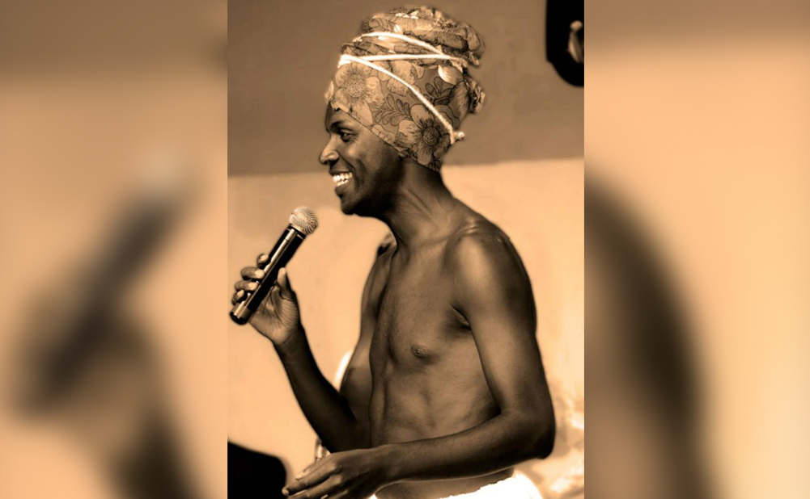

CARREGANDO

Reunimos neste site um pouco da história de pessoas que passaram pela cidade de Alfenas e que ficaram conhecidas Brasil a fora.
As fartas pastagens, com clima ameno e abundância de água, atraíram os primeiros ocupantes para esta região, parcialmente desocupadas pelos indígenas, primeiros ocupantes destes campos e montanhas e que morreram ou tiveram que fugir para não serem vítimas da colonização branca.
As fartas terras atraíram para a região os primeiros colonizadores brancos, que, satisfeitos com a possibilidade de ocupar e viverem em uma região privilegiada trouxeram ao longo do tempo uma leva de escravos negros, vindos, a contra gosto, mover a economia local.
Em 1.805, Francisco Siqueira Campos e sua esposa, Floriana Ferreira de Araújo, doaram terras para a construção de uma capela, consagrada à São José e Nossa Senhora das Dores, nos domínios da Fazenda da Pedra Branca.
Alferes Domingos Vieira e Silva foi o principal responsável pela construção do templo. Com a ajuda de amigos, traçou os arruamentos, localizando as praças e iniciando diversas edificações.
Em 1.832, por Resolução do Imperador D. Pedro II, foi criada a Paróquia de São José dos Alfenas, que passaria em 1.839, a Freguesia de Alfenas e, posteriormente, São José e Dores de Alfenas.
Com a criação da Vila, desmembrada do Município de Caldas em 1.860, passou a denominar-se Vila Formosa, sendo elevada à categoria de cidade em 1.869, como Vila Formosa de Alfenas. A partir de 1.871, chamou-se Alfenas, por força da legislação que proíbe a duplicidade de topônimos.
Esta designação originou-se da expressão "vamos nos Alfenas", usada pelos habitantes da região quando se dirigiam ao povoado onde moravam os Martins Alfenas, pioneiros residentes do futuro Município.
[...] Entre 1800 e 1803 Domingos Vieira e Silva convocou seus amigos e vizinhos Francisco de Siqueira Ramos, fazendeiro em Cabo Verde, Capitão Custódio José Dias, proprietário da Fazenda da Cachoeira, e Padre Venâncio José de Siqueira, vigário em Cabo Verde, combinando com eles fundar uma povoação na zona em que morava...
[...] Eis que em 1805, dois anos após a fundação da Capela de Nossa Senhora das Dores e São José da Pedra Branca, Domingos Vieira e Silva vai à Vila da Campanha da Princesa da Beira (eleva à vila por alvará de 20 de outubro de 1798) levando uma procuração de Francisco de Siqueira Ramos e sua mulher Floriana Ferreira Araújo que, a pedido do Alferes Domingos Vieira e Silva doaram (já fundada a capela) uma parte das terras que possuíam nas margens nascentes do Ribeirão da Pedra Branca, na Fazenda da Boa Vista e que confrontavam com os terrenos habitados pelos Martins Alfenas...
[...] Em discurso pronunciado em 14 de junho de 1932, Alexandre da Silveira Mariano, - um dos estudiosos da História de Alfenas como também Romeu Vieira e o mestre Nelson Ferreira Lopes – quando se comemorava o centenário da elevação da freguesia à Paróquia, com denominação de “São josé dos Alphenas” por decreto imperial de 14 de julho de 1832, dizia que “a origem do nome Alfenas era devido ao arbusto da família das oleínas” – abundante no lugar onde residiam os Martins – acrescentando que “nos áureos tempos já distinguira o jurisconsulto romano Alphenos, sendo o referido arbusto de origem árabe e dos mais belos”.
Uma das figuras mais icónicas de nossa cidade é, de fato, Rogério de Oliveira ou Rogerinho Jota Quest. Conhecido por ser vocalista de uma das bandas mais marcantes da década de 90, o Jota Quest.
Rogério nasceu em Alfenas-MG em 1972. Aos doze anos, montou sua primeira banda com o irmão Wilson Sideral e dois primos. Em 1987, tocava em festas e eventos na cidade, na banda Contato Imediato. Em 1989, começou a fazer um programa semanal, aos sábados, na rádio Atenas FM, juntamente com o locutor Celino Menezes, que comandava o programa Noite 94,1. Antes de ser músico, era analista de sistemas.
Em 1993, mudou-se para Malacacheta Minas Gerais e foi selecionado para ser vocalista da banda Jota Quest. Em 2002, gravou uma música para o filme O Planeta do Tesouro. Venceu o Prêmio Multishow 2007 na categoria Melhor Cantor. Em agosto de 2007, tornou-se pai pela primeira vez. É casado com Ludmila Alves Carvalho, que formou-se em Engenharia Aeronáutica pela UFMG em 2008. Com a vida corrida entre programas em rádio, shows e estudos (era análista de sistemas) ele acabou se focando mais no seu lado musical, sendo assim, mudou o sobrenome para Flausino que foi herdado de seu avô José Flausino.
Confira na integra a entrevista do programa The Noite que contou com a participação do artista:
Jota Quest, é uma banda de pop rock brasileira, que compreende sete álbuns de estúdio, quatro álbuns ao vivo, quatro coletâneas, seis álbuns de vídeo e diversas aparições em trilhas sonoras e coletâneas. Nasceu com o nome Jay Quest, por inspiração do desenho animado Jonny Quest. Para não serem processados pela Hanna-Barbera, o grupo teve de mudar o nome da banda para Jota Quest no final da década de 1990. Há também uma versão que diz que a alteração foi feita por Tim Maia, que, se referia a banda como Jota Quest.
A banda também encontrou inspiração na banda de acid jazz Jamiroquai.Foi por gostar de black music (soul/funk/disco) e acid jazz que o baixista PJ e o baterista Paulinho Fonseca resolveram formar uma banda. Em seguida, o guitarrista Marco Túlio Lara e o tecladista Márcio Buzelin juntaram-se ao grupo. Rogério Flausino começou sua atuação no conjunto após ser escolhido num teste com mais de dezoito candidatos.
Curta a música:
Wilson da Silveira Oliveira Filho conhecido como Wilson Sideral é natural de Alfenas-MG, nasceu em 1975, é um produtor, compositor, cantor e guitarrista.
Irmão de Rogério Flausino, com quem tem canções em parceria de grande sucesso, e de Flávio Landau, também músico, Wilson Sideral vem de uma família mineira apaixonada pela música.
Suas composições misturam elementos do rock, soul, MPB e blues. Com indicações aos prêmios Grammy Latino e Prêmio Multishow de Música Brasileira, Wilson Sideral é também reconhecido por seu trabalho como compositor de sucessos para artistas consagrados da música ‘pop’ brasileira, como Jota Quest (“Na Moral”, “Fácil”, “Já Foi”…), Fiuk (“Foi Preciso Você”), Tomate (“Um Beijo Seu”, “Foi”, “You”…) e Funk Como Le Gusta (Yeah, Yeah, Yeah).
Sob influência da família, a paixão pela música surgiu logo cedo. “Cresci participando de serestas, vendo meus pais cantarem Lamartine Babo e meus tios cantando Roberto Carlos e clássicos da Jovem Guarda”, lembra.
Em 1987, Sideral montou a banda Contacto Imediato. No ano seguinte, aos 13 anos, conquistou o troféu de melhor instrumentista no Primeiro Festival de Rock de Poços de Caldas-MG. Sua segunda banda, a Capitão Gancho, foi montada em 1992, com repertório inspirado em clássicos do rock’n roll dos anos 70 e da cena retrô de Seattle.
Em 1993, a convite do amigo Alexandre Mourão, muda-se para Belo Horizonte- MG, para integrar o grupo Omeriah, uma banda com fortes influências do reggae e da música caribenha. Com o grupo Omeriah gravou, no ano seguinte, seu primeiro disco oficial, “Omeriah”, lançado pelo Selo Plug/BMG, com fortes referências de Reggae e da Música Caribenha. Após quatro anos como guitarrista, backing vocal e compositor do Omeriah, Sideral deixa o grupo e, finalmente, começa sua carreira solo, adotando, a partir de então, o nome artístico Wilson Sideral.
Sua primeira ‘demo’ de 1997, “Um Caipira na Era Espaciar”, foi recebida com entusiasmo pela cena independente de Belo Horizonte.
Em 1998 começou a ganhar reconhecimento nacional pós uma composição de sua autoria, a música "Fácil" ser gravada pelo seu parceiro e irmão, Rogério Flausino, do Jota Quest. Por conta do sucesso desta música, a gravadora Universal Music oferece a Sideral um contrato para a gravação de seus dois primeiros discos: 1, de 1999, que foi produzido por Dudu Marote e que tem como destaque os hits "Não Pode Parar" e "Zero a Zero", e "Eu Estarei Com Você". O primeiro single, “Não Pode Parar”, foi muito bem aceito pelas rádios jovens, o que lhe rendeu um videoclipe que figurou no Top 20 da MTV. Por esse disco, Sideral recebeu a indicação ao prêmio de artista revelação no Prêmio Multishow de Música Brasileira do ano seguinte.
Seu segundo CD, "Na Paz", de 2002, foi produzido por Tadeu Patolla. O álbum contou com as participações de Dinho Ouro Preto (Capital Inicial) e Bahiano (banda argentina Los Pericos), e emplacou o single “Um Beijo Seu”, como tema da novela teen “Malhação”. No final do ano, o álbum foi indicado ao Grammy Latino como melhor álbum de rock brasileiro.
Em julho de 2004, Wilson Sideral monta o seu selo independente Sideral Experience e, em outubro do mesmo ano, lança, em parceria com a Universal Music, o terceiro álbum,: “Lançado Ao Mar”. A turnê deste cd lhe rendeu um convite pelo Multishow e Universal Music para participar do DVD, “Um Barzinho e um Violão – Jovem Guarda”, gravando o clássico de Roberto e Erasmo Carlos, “Lobo Mau”.
Em 2007 lança seu quarto álbum, “Dias Claros”, que emplaca três canções em trilha de novelas, “Fugindo de Mim” (“Malhação”), “Minha Garota” (“Amor e Intrigas” – Record) e, “Exagerado” (“Revelação” – SBT ), uma releitura ao clássico do ídolo, Cazuza.
Em janeiro de 2009, em comemoração aos 10 anos do lançamento de seu primeiro álbum, Sideral gravou seu 1º álbum Ao Vivo (Wilson Sideral Ao Vivo). O álbum foi gravado na cidade de Serra no Espírito Santo. Dentre as faixas, estão as regravações das músicas "Fácil", "Na moral" e "O vento" (que são do Jota Quest), "Fogo" (que é do Capital Inicial) e "Metamorfose ambulante (que é do Raul Seixas). O lançamento deste CD e DVD ao vivo foi lançado no início de 2010.
Nesse mesmo ano, laça o EP #Singles. Com edição limitada, #Singles foi lançado exclusivamente em USB Flash Drive [Pen Drive], sendo o primeiro trabalho musical no Brasil com essa tecnologia.
Em 2015, Sideral tocou no Rock in Rio ao lado da cantora Luana Camarah.

Wilson Sideral aparece em programa AMAURYJR, confira:
O cantor e compositor mineiro Flávio Roberto Landau está na estrada desde 1994. Começou tocando bateria em uma banda gospel. Em 1998 começou à compor suas próprias canções e em 1999 lançou seu primeiro CD. Daí pra frente não parou mais!
Autor do hit Lata Velha (tema do quadro do programa Caldeirão do Huck) e que também já dividiu os microfones com personalidades como Zeca Baleiro, Zé Geraldo e Eduardo Araújo têm se tornado um dos principais nomes da música independente no Brasil. Atualmente está em turnê com o Show "Luau do Landau" para conhecer mais acesse: http://www.landauoficial.com.br Vale a pena conferir! DISCOGRAFIA: Chegue perto de mim 1999, Buraco e quebra-mola 2001, Forever 2003, O predador do asfalto 2005, Agroboy (DVD 2008), Washington Del Buffalo 2009, Minha vida não tem freio 2010, Duetos e Versões Acústicas 2012, Casca Grossa 2014 Luau do Landau 2016 Obra Interditada 2017
Em 1978 nasce em Alfenas, sul do estado de Minas Gerais, Flávio Oliveira de Oliveira. Filho de Wilson da Silveira Oliveira e Maria das Graças Oliveira. Irmão de Rogério Oliveira, Wilson da Silveira Filho e Letícia Oliveira de Oliveira. Em 1992, inicia aulas de bateria e percussão e começa a se apresentar no circuito de rock universitário atuando como baterista e percussionista nas bandas 33.3, Skindilize, Adagas, Rude Faina e a dupla sertaneja Jô e Paulinho.

Em 1997 se muda para Belo Horizonte para acompanhar o irmão Wilson Sideral como Baterista e percussionista de sua banda. No ano seguinte, assumidamente roqueiro da roça começou a compor suas próprias canções, adotando o pseudônimo de LANDAU e um visual pra lá de especial. O chapéu de caubói se tornou a marca registrada do artista. Gravou em 1998 seu primeiro cd chamado "CHEGUE PERTO DE MIM", nas cidades de Varginha-MG, Três Pontas-MG e Belo Horizonte-MG. Destaque para a canção Doce Calabouço.
Video Clip oficial:
Chega os anos 2000 e Landau se apresenta no programa O Positivo da Rede Bandeirantes em São Paulo, na época ao lado do apresentador Otaviano Costa.
O ano é 2001, lança em Belo Horizonte o CD Buraco e quebra-mola, produzido por Gerson Barral e Ronaldo Gino o cd possui 10 faixas de sua própria autoria. Canções irreverentes como "O Cowboy do Asfalto", "Não sou irmão de ninguém", "Bebi mais que o meu Landau" colocam Landau como um dos principais nomes do Rock Rural até os dias de hoje. No ano seguinte muda-se para São Paulo à convite do ídolo Eduardo Araújo, para fazer parte do casting da gravadora Number One. Em 2003 grava o CD Forever, com mais 10 canções inéditas e também de sua autoria. Neste ano começa a abrir shows por todo brasil para as bandas mais consagradas do POP e do Rock, como Cidade Negra, O Rappa, Jota Quest e LS Jack. Dois anos depois é contratado pela gravadora ATRAÇÃO FONOGRÁFICA e lança o CD "O predador do asfalto" sua primeira coletânea lançada nacionalmente. Este CD lhe rendeu 2 anos e meio na estrada e apresentações nos mais famosos programas de TV do país. E em 2006 é convidado pelo apresentador Luciano Huck para compor a trilha sonora do quadro LATA VELHA da rede Globo. No ano de 2008 alcançou um feito histórico, sendo o primeiro artista no Brasil à disponibilizar um DVD completo totalmente de graça pela internet. Este DVD, intitulado AGROBOY foi lançado pelo seu próprio selo virtual "Elegance virtual music". As 10 canções inéditas deste álbum foram gravadas no Studio Nimbus em São Paulo.SP e no Studio Polifonia em Belo Horizonte. Sob a supervisão de Ronaldo Gino e Paulo Senoni. Em 2010 lançou a compilação Minha Vida nâo tem freio CD + DVD. Esta compilação rendeu ao artista 2 anos e meio na estrada e mais de 200 apresentações por todo Brasil e por países como Argentina, México e Venezuela.
Inicia a turnê NOSTALGIA em 2013, que faz parte do lançamento do CD Duetos e Versões Acústicas. Neste trabalho destacam-se os duetos especiais com os mestres Zeca Baleiro, Zé Geraldo, Netto Rockfeller, Dalvan (dupla Duduca e Dalvan), Zé Guela, Ricardo Gaspa (banda Ira), Karol Sun, Renato Galozzi, Laco Bassualdi, Beto Vieira e Ângelo Máximo. Este ainda conta com 10 canções acústicas inéditas, dentre elas a regravação de "Entre a serpente e a estrela" de Zé Ramalho e Aldir Blanc, a canção "Ex-amor" de Amado Batista, o clássico internacional "By My Side" da banda australiana INXS, três canções em espanhol "Vaquero Solitario", "Mi vida no tiene freno" e "Juntos a La par" regravação do ícone do rock sul americano Pappo. Mostrando que, versatilidade é quesito básico na carreira do artista.
Em 2014 completa 15 anos de estrada, com o lançamento do CD Casca Grossa, sétimo CD, inteiramente inédito. Produzido, gravado e mixado por Paulo Senoni, em São Paulo, e masterizado por Steve Corrao, em Nashville, nos Estados Unidos, “Casca Grossa” possui 10 canções. Destaque para o hit “Pé na estrada”, a irreverente “Todas as gostosas do mundo” e a versão prá lá de especial de “Eu sou Terrível”, de Roberto e Erasmo, clássico da jovem guarda.
Já em 2016 lança seu 3º DVD gravado em Arraial D´Ajuda (BA), na paradisíaca praia da Pitinga. Misturando fragmentos da psicodelia hippie woodstockiana como Eagles e Zé Ramalho com uma poesia mais forte do que o rifle. A música autoral e inédita “Guerreiro da Luz” homenageia a mãe durante a dificuldade que viveu na luta contra o câncer, simbolizando a força, o foco e a fé: “Segure a minha mão, a caminhada é longa pra seguir. Eu te conto aquela história dos anjos da Pedra da Cruz”. Neto Rockefeller, de renome internacional, deixa sua marca e explora a clássica guitarra dos filmes de Velho Oeste de Clint Eastwood, que retratam histórias de índios e cowboys, o caminho do meio que Landau sempre andou.
Veja esse show completo:
O mais recente trabalho de 2017, "Obra Interditada" é uma coletânea especial de regravações nunca antes lançadas em nenhum outro trabalho. Esta compilação exclusivamente preparada para as plataformas digitais. Neste álbum, Landau enfatiza a dificuldade em se conseguir liberações referentes aos direitos autorais para regravar canções que sempre fizeram parte do seu repertório por isso o nome "Obra Interditada".
Veja agora Landau em entrevista à revista Bar do Gelu:
Landau e Wilson Sideral batem papo com Faa Morena no Ritmo Brasil:
Nesse bate-papo, Landau fala sobre como pegar as menininhas. Sideral dá seu depoimento sobre drogas e como o vício afetou suas vidas, como irmãos, além de toda a família a qual tem uma ONG, que ajuda crianças separadas de seus pais, que estão, de alguma forma, comprometidos com a criminalidade. Além de trabalharem para entidades sociais, seus pais trabalham pela cultura da cidade de onde vieram, Alfenas - MG. Muitos risos e descontração, no meio desses dois irmãos tão diferentes, confira:
Uma miss que se tornou famosa nos anos 60 por ter ostentado a alcunha de Miss Brasil nº 3, título dado a candidata que ficava em terceiro lugar no prestigiado certame nacional coordenado pelas Emissores e Diários Associados do Rio de Janeiro.
Era uma quinta-feira, 27 de novembro de 1945, na cidade de Alfenas, sul de Minas Gerais, quando uma garotinha nasceu, para alegria de uma jovem senhora e de um respeitado e prestigiado funcionário do Banco do Brasil. Aquela menina recebeu o nome de Maria Isabel de Avelar Elias e estava predestinada a ser eleita a quarta mulher mais bela do mundo de 1964. Dezenove anos depois, quando a família morava em Aracaju, cidade para onde o seu pai havia sido transferido, aquela garotinha, agora uma jovem linda, inteligente, simpática e cheia de classe e charme, aceitou convite para disputar o Miss Sergipe. Foi eleita em 20/06/1964, no Iate Clube Sergipe, clube que representava, derrotando quatro concorrentes: Miss Clube dos Diretores Lojistas, Elza Góes Lisboa; Miss Universitários, Alda Maria Simonetti Maia; Miss Lagarto, Lídia Margarida Fontes e Miss Vasco Esporte Clube, Brasilina Chagas.
Da esquerda para a direita: Vera Lúcia Couto Santos, Miss Guanabara, segunda colocada; Angela Vasconcelos, Miss Paraná, primeiro lugar; e Maria Isabel de Avelar Elias, Miss Sergipe, terceira colocada.
Vencida a fase estadual, eis Maria Isabel no Maracanãzinho, na noite de 04/07/1964, diante de um júri exigente e de um público numeroso, na disputa do Miss Brasil, ao lado de 23 misses. Na comissão julgadora estavam: Pomona Polotis, Tônia Carrero, Acioly Neto, Mitzi de Almeida Magalhães, Oscar Santamaría, Edite Piano Guimarães, Leão Veloso, Eda de Luds, Hélio Beltrão, Edílson Varela e Justino Martins.
A comissão deveria apontar apenas oito finalistas, mas por exigência de Tônia Carrero, que tinha gostado muito de Ana Maria Carvalhedo, Miss Ceará, foi eleita mais uma. Por ordem de classificação, as nove finalistas foram as representantes de Paraná (Ângela Tereza Pereira Reis Neto Vasconcelos); Guanabara (Vera Lúcia Couto Santos); Sergipe (Maria Isabel de Avelar Elias); Pernambuco (Ana Maria Costa Caldas); Rio Grande do Norte (Neli Cavalcanti Padilha, a preferida de Ângela Vasconcelos); Estado do Rio (Cecília Rangel Martins da Rocha); Rio Grande do Sul (Rosa Maria Gallas); Minas Gerais (Marília de Dirceu Silva, dona de um rosto que lembrava muito o da atriz italiana Sofia Loren); e Ceará (Ana Maria Carvalhedo).
Na generosa edição sobre o concurso, a revista Fatos & Fotos, de 11/07/1964, comentou:
“Qualquer uma delas tinha classe para representar o Brasil. Nunca houve tantas candidatas com tantas chances para arrebatar o título. 50 mil espectadores, no Maracanãzinho, foram unânimes em aplaudir a decisão do júri que consagrou Miss Paraná. Quando os jurados apontaram o nome de Ângela Teresa Vasconcelos - uma carioca que reside há 15 anos no Paraná – como a representante máxima da beleza brasileira em 1964, houve um delírio no Maracanãzinho. Vera Lúcia Couto Santos, Miss Guanabara, e Maria Isabel Avelar Elias, Miss Sergipe, foram as outras duas grandes vencedoras. O público estranhou a ausência de Miss Pernambuco, Ana Maria Costa Caldas.
“Antes do desfile, a maior torcida era a de Miss Guanabara. Quando Miss Paraná desfilou com seu vestido justo, bordado de pedrarias, encontrou uma rival. A eleição de Vera Lúcia Couto Santos, Miss Guanabara, para o segundo lugar, estabeleceu polêmica entre o público. Mas Maria Isabel Avelar Elias, Miss Sergipe, agradou em cheio para o terceiro lugar. Miss Paraná teve 96 pontos, na contagem final. A segunda colocada, Miss Guanabara, 79, e a terceira, Miss Sergipe, 70. Maria Isabel ficou satisfeita com o terceiro lugar. “Se eu tivesse no júri, também votaria em Ângela e Verinha.” – disse ela.
No domingo, 05/07/1964, quando a revista O Cruzeiro promoveu o Baile da Coroação da Miss Brasil no Santapaula Quitandinha Clube, em Petrópolis, prestigiado por 3 mil pessoas, em depoimento a Hélcio Jose, publicado em O Cruzeiro, de 1º/08/1964, Maria Isabel de Avelar Elias declarou:
“Meu sonho era conhecer a Europa. Parece que me preparei. Há 4 anos estudo inglês, não com acento oxfordiano, porém no Instituto Brasil- Estados Unidos. Agora vou cadenciá-lo britanicamente. Outro sonho meu é ser pintora. Terminado este reinado de sonho e encantamento, vou ingressar, quando voltar para Aracaju, na Escola de Belas Artes. E seguir meu Normal (estou no 2º ano), cursar Filosofia – quero estudar línguas neolatinas - prosseguir nos estudos de piano e acordeão, frequentar o Iate Clube, vir ao Rio passar minhas férias (como o faço habitualmente) e finalmente concluir o conhecimento completo de todas as capitais brasileiras: já viajei por todos os estados, à exceção do Amazonas.”
Dona de uma beleza doce e tranqüila, Maria Isabel tinha 1,70m de altura, 92 cm de busto, 92 cm de quadris, 59cm de cintura, 59cm de coxa, 21 cm de tornozelo, olhos castanhos, cabelos longos e um sorriso meigo e simples. Fotografava muito bem, tanto que foi eleita a Miss Fotogenia do Miss Brasil. Adorava doce de coco sergipano e levou para Londres seu traje típico de vaqueiro, eleito o mais belo do Miss Brasil. Fazer e manter amizades eram o seu forte e se tornou amiga da gaúcha Ieda Maria Vargas, Miss Brasil e Miss Universo 1963, e de Maria Tereza Boblitz, Miss Maranhão. Do seu modo, com muita tranqüilidade, preparou-se intensamente para o Miss Mundo. Em uma bela casa situada na praia da Atalaia, tomava banho de mar e piscina, fazia sauna e exercícios físicos e relaxava indo com o pai e a mãe para assistir no cinema os filmes policiais que adorava.
Da esquerda para a direita, Miss Nova Zelândia, Lyndal Ursula Cruikshank, quinto lugar; Miss Taiwan, Linda Lin Su-hsing (terceira colocada); Ann Sidney, Miss Reino Unido (primeiro lugar); Ana Maria Soria, Miss Argentina (segunda colocada); e Maria Isabel de Avelar Elias, Miss Brasil, quarto lugar.
Para satisfação de 100 milhões de brasileiros, população estimada no primeiro ano da ditadura militar, em 12/11/64, 15 dias antes de completar 19 anos de idade, Maria Isabel de Avelar Elias conquistava um honroso quarto lugar no Miss Mundo, em Londres. Foi a melhor colocação até então conseguida por uma brasileira naquele concurso. Concorrendo com 41 candidatas, perdeu apenas para Ann Sidney, Miss Reino Unido (primeira colocada); Ana Maria Soria, Miss Argentina (segunda), e Miss Taiwan, Linda Lin Su-hsing (terceira colocada).
Nasce em 14 de março de 1990, Victor Corrêa de Oliveira Filho, um piloto automobilístico brasileiro.
O jovem Victor Corrêa começou sua carreira no kart em 1999 em Alfenas aos 9 anos de idade disputando campeonatos regionais e logo se sagrou Campeão Sul-Mineiro na categoria Cadete. Depois tornou-se Campeão Mineiro na categoria Júnior Menor, bicampeonato mineiro na categoria Júnior, além de excelentes resultados no competitivo Campeonato Paulista e também no Campeonato Brasileiro. Em 2006 estreou na Fórmula São Paulo, em 2007 conquistou com uma rodada de antecipação o título da categoria. Em 2008 ficou em 4º lugar no campeonato Inglês de Fórmula Ford. Em 2009 ficou em 3º lugar no campeonato de Fórmula 3 Inglesa - National Class, seguindo os passos de grandes pilotos campeões mundiais de Fórmula 1 como Emerson Fittipaldi e Ayrton Senna. Em 2010 disputou o 1º semestre na Formula Renault Inglesa pela equipe CRS Racing team. E no 2º semestre de 2010 disputou a Formula European F3 Open pela equipe West-Tec Team.
| 2009 |
|---|
| 3º Colocado na Fórmula 3 Inglesa - National Class (2009) |
| 2008 |
| 4º Colocado na Fórmula Ford Inglesa (2008) |
| 2007 |
| Campeão da Fórmula São Paulo (2007) |
| Recorde do traçado National no tradicional circuito de Silverstone, em seu primeiro teste com um carro de FÓRMULA FORD INGLESA (2007) |
| 2006 |
| 6° colocado na Fórmula São Paulo (2006) |
| 100% de Pódiuns em corridas completadas (2006) |
| 2005 |
| 5º colocado no Campeonato Paulista Light de kart (2005) |
| Integrante da equipe do piloto de Fórmula 1 Felipe Massa na 500 Milhas da Granja Viana (2006) |
| 2004 |
| Tricampeão Mineiro de kart - Júnior (2004) |
| Bicampeão do ranking Mineiro de automobilismo - Kart Júnior (2004) |
| Pole position do Troféu Brasil de kart (2004) |
| 2º melhor piloto de kart de MG (96 concorrentes) (2004) |
| Campeão Paulista da Super GP Simeira (2004) |
| Vice-campeão Paulista Light de kart (2004) |
| 3º colocado na Copa Brasil de kart (2004) |
| 7º colocado no Campeonato Paulista de kart (2004) |
| 8º colocado no Campeonato Brasileiro de kart (2004) |
| 9º colocado no Troféu Brasil de kart (2004) |
| 2003 |
| Bicampeão Mineiro - categoria Júnior (2003) |
| Melhor piloto Mineiro da categoria (ranking FMA) (2003) |
| 4º Melhor piloto Mineiro entre todas as categorias (ranking FMA) (2003) |
| 5º colocado no Campeonato Paulista Light (2003) |
| 7º colocado no Campeonato Paulista (2003) |
| 2002 |
| Campeão do Campeonato Mineiro - Júnior Menor (2002) |
| 5º colocado no Campeonato Paulista - Júnior Menor (2002) |
| 2001 |
| Campeão da Copa Caraguá de kart - categoria Sport- motores v-4 (2001) |
| Vice-campeão Praiano de kart - categoria Sport (2001) |
| Vice-campeão Paulista Schincariol de kart - Itú, SP (2001) |
| Vice-campeão Sul Mineiro - categoria Novatos v-4 (2001) |
| 4º no Campeonato Paulista Light - Junior Menor (2001) |
| 7º no Campeonato Paulista - Junior Menor (2001) |
| 12º no Campeonato Brasileiro - Junior Menor - Salvador, BA (2001) |
| 2000 |
| 4º no Campeonato Paulista - categoria Cadete (2000) |
| 4º no Campeonato Brasileiro de Campo Grande - MTS (2000) |
| 3º no Campeonato praiano de kart - Caraguatatuba, SP (2000) |
| 3º no Grande campeonato Schincariol de kart- Itú, SP (2000) |
| 3º no Campeonato paulista da LIA- (ligas independentes de automobilismo - Itú, SP (2000)) |
| Campeão sul mineiro (2000) |
| 1999 |
| Campeão da II Copakart de Alfenas-MG - cadete (1999) |
Confira uma entrevista dada pelo piloto:
Nascido em 1954, em Alfenas-MG, é jornalista, professor, doutor em Comunicação pela Escola de Comunicações e Artes da USP, executivo na área de comunicação digital e Visiting Research Fellow (no outono de 2013) na Columbia University Graduate School of Journalism, em Nova York. É também fundador do Torabit, um sistema de monitoramento digital que começou a operar comercialmente no final de 2015.

Caio Túlio trabalhou durante 21 anos na empresa que edita o jornal Folha de S.Paulo onde foi editor, secretário de redação, correspondente na Europa (baseado em Paris), diretor de revistas e pioneiro nos investimentos da empresa em internet. Foi ainda escolhido o primeiro ombudsman da imprensa brasileira, cargo que exerceu neste mesmo jornal.
Em seguida, Caio Túlio criou a Revista da Folha e, em 1995, começou a trabalhar na criação do que seria depois o Universo Online, o UOL, do qual, além de fundador, foi o diretor geral até 2002.
Ao se desligar do grupo Folha, no final de 2002, Caio Túlio passou a presidir a Fundação Semco, onde ajudou a criar o Instituto DNA Brasil, centro de estudos voltado para as questões estratégicas do Brasil.
Deu aulas de Ética Jornalística de 2003 a 2012 na Faculdade Cásper Líbero, em São Paulo, cujo curso foi a base de seu doutorado na Escola de Comunicações e Artes na Universidade de São Paulo (USP).
Em maio de 2006 assumiu o cargo de presidente do Internet Group, braço de internet da Brasil Telecom, que reunia os portais e provedores iG, iBest e BrTurbo. Deixou o iG em janeiro de 2009 depois que a empresa foi adquirida pela Oi. Em 2009, trabalhou como consultor para a elaboração da estratégia de plataforma para a convergência da Oi.
Em junho de 2008 Caio Túlio defendeu sua tese na USP e tornou-se doutor em Comunicação. O trabalho trata da ética no jornalismo, tanto na sua forma impressa tradicional quanto na nova mídia. Intitula-se "Moral Provisória - Ética e jornalismo: da gênese à nova mídia".
De 2010 a 2014 foi sócio da MVL Comunicação, onde foi responsável pela unidade de mídia digital. Em 2010 e, de novo, em 2014, foi o responsável pela comunicação digital das campanhas de Marina Silva (no Partido Verde-PV e no PSB) à Presidência da República.
Caio Túlio também foi "chairman" da Phorm no Brasil (em 2011), empresa especializada em "behavior targeted advertising" e precursora da mídia programática.
Desde 2011 é professor de jornalismo digital no curso de pós-graduação em jornalismo da ESPM, em São Paulo.
Em 2012, tornou-se um dos curadores do concurso cultural Movimento HotSpot.
Em 2013, tendo como escola mãe a ESPM-SP, Caio Túlio aceitou convite da Columbia University para a função de Visiting Research Fellow na Graduate School of Journalism, de setembro a dezembro, a fim de realizar pesquisa sobre os modelos de negócio da indústria da comunicação na era digital que resultou num paper no qual analisa um modelo de negócio possível para o jornalismo na era digital.
Caio Túlio é conselheiro da Transparência Brasil e participa dos conselhos editoriais da Revista de Jornalismo da ESPM e da Revista Pesquisa Fapesp. Também foi conselheiro da Fundação Padre Anchieta, mantenedora da TV Cultura de São Paulo.
Caio fala sobre a ética no jornalismo:
Publicou quatro livros, Ética, jornalismo e nova mídia - uma moral provisória (Zahar, 2009), O que é Anarquismo (Brasiliense, 1981), Cale-se (A Girafa, 2003) e Ombudsman - O Relógio de Pascal (Geração Editorial, 2006). Também ministrou aulas de Jornal Laboratório no departamento de Jornalismo da PUC de São Paulo e ministrou curso na pós-graduação da ECAUSP.
É co-autor da primeira versão do Manual Geral de Redação da Folha (1984), tem artigos em livros sobre comunicação e organizou livros do Instituto DNA Brasil tais como 50 Brasileiros param para pensar o país (Instituto DNA Brasil, 2005) e Somos ou estamos corruptos? (Instituto DNA Brasil: 2006). Além disso, foi o diretor geral dos primeiros eventos anuais do Instituto DNA Brasil que reúnem personalidades notáveis das diversas áreas do conhecimento para pensar o futuro do país.
Em 2014 teve publicada pela Revista de Jornalismo da ESPM o seu paper desenvolvido na Universidade Columbia: Um modelo de negócio para o jornalismo digital, disponível online em seu site.
Caio fala um pouco sobre sua tese sob o título "Moral Provisória - Ética e jornalismo: da gênese à nova mídia":
Caio Túlio Costa e Ricardo Gandour debatem sobre a desinformação e fake news:
Natural de Alfenas, José Sette foi um politicio brasileiro, que nasceu em 14 de abril de 1920. Aos 82 anos faleceu no Rio de Janeiro.
Diplomata, advogado, diplomado pela Faculdade de Direito da Universidade Federal de Minas Gerais, em 1945; pós-graduado pela Universidade Mc Gill, de Montreal, no Canadá, em 1949.
Exerceu os cargos de prefeito do Rio de Janeiro, embaixador e de presidente do gabinete civil da presidência no governo de Juscelino Kubitschek.
Em 1945 ingressou na carreira diplomática. Foi terceiro secretário, servindo na Embaixada do Brasil em Washington D.C., em 1947; Vice-cônsul em Montreal, no Canadá, em 1947; terceiro secretário, em 1950; segundo secretário em 1951; primeiro secretário, em 1953, servindo na delegação brasileira junto a ONU. Foi Secretário-Chefe do Gabinete Civil da Presidência da República, entre 1952 e 1954. Foi Cônsul em Florença, na Itália, em 1954; Ministro em 1956; Ministro Plenipotenciário, em missão especial nas solenidades de posse do Presidente da Colômbia, em 1958; Subchefe, em 1956 e chefe, em 1959, do Gabinete Civil da Presidência da República; Secretário Geral no Conselho Coordenador de Abastecimento, em 1959, Governador Provisório do antigo Estado da Guanabara; Membro do Conselho Administrativo do Banco Nacional de Desenvolvimento Econômico, em 1956; e então prefeito do Distrito Federal, entre 1960 e 1961.
Foi o último chefe de gabinete a trabalhar no antigo Distrito Federal. Em 1961 ingressou como representante permanente do Brasil no escritório das Nações Unidas, em Genebra. De 1963 a 1964, foi embaixador na Suíça; de 1964 a 1968 foi representante permanente do Brasil na Assembleia das Nações Unidas; e de 1972 a 1979 foi embaixador na Checoslováquia. Além disso, chefiou as delegações brasileiras nas reuniões da assembleia geral da ONU e, tanto em 1964, como de 1967 a 1969 foi o representante do Brasil no Conselho de Segurança. Em 1970, como sucessor do falecido Gilberto Amado, foi escolhido membro da Comissão de Direito Internacional Público das Nações Unidas, sendo reconduzido em 1971 e em 1977.
Tendo ficado, de 1970 a 1978, na Comissão de Direito Internacional Público das Nações Unidas, atuou como juiz ao Tribunal Internacional de Justiça, em Haia, de 1979 a 1988; sendo que de 1982 a 1985, foi Vice-Presidente deste tribunal.
Desde 1977, pertencia ao Instituto Internacional de Direito, e desde 1988, era membro honorário da Sociedade Americana para o Direito Internacional.
Aposentando-se, retornou ao Rio de Janeiro, onde faleceu a 30 de agosto de 2002, em decorrência de um derrame cerebral.
José Sette Câmara Filho e Juscelino Kubitsheck. S.I., 1 de setembro de 1960. Arquivo Público do Estado de São Paulo/Última Hora.
Nascido em Alfenas em 29 de setembro de 1850, viveu até 11 de fevereiro de 1919. Foi um político brasileiro.

O coronel José Bento Xavier de Toledo era filho do sargento-mor Bento Xavier de Toledo e de Ana Custódia da Silveira, por esta neto de Delfina Custódia da Silveira, a qual era filha de João Martins Alfena, "O Velho", um dos irmãos Alfenas, que foram os pioneiros povoadores da cidade homônima.
Casou-se com Henriqueta Gomes Teixeira, com quem teve quatro filhos: Ana Guilhermina Xavier de Toledo, Antônio Xavier de Toledo, José Bento Xavier de Toledo Júnior e Escolástica Xavier de Toledo. A família, de forte formação católica, tinha espiritualidade beneditina, pelo que denominou os dois últimos filhos em homenagem aos santos gêmeos: São Bento e Santa Escolástica. Era sobrinho do Cônego José Carlos Martins, de quem herdou o espírito empreendedor que o tornou o mais importante político de Alfenas no início do século XX.
Foi agente executivo (prefeito) desta cidade, de 1912 a 1914. Grande proprietário de terra, destacou-se na cafeicultura e na pecuária. Era tenente-coronel da Guarda Nacional.
Devido ao grande desenvolvimento que promoveu na urbanização da cidade de Alfenas, a municipalidade o homenageou dando seu nome à principal escola primária local.
Esta foi a a primeira escola pública de Alfenas. Seu decreto de Criação foi assinado em 25 de janeiro de 1910 e o seu Ato de Autorização de Funcionamento em 01 de setembro do mesmo ano.
Construção do "Coronel" - Segundo Regimento Interno da Escola.
Em 15 de agosto de 1908, o então prefeito de Alfenas, José Bento Xavier de Toledo, dirigiu-se à população alfenense nestes termos:
"A necessidade imperiosa da fundação de um grupo escolar nesta cidade exige uma reunião popular em que se lancem as bases dessa fundação. O abaixo assignado convida o povo para uma reunião no dia 18 do corrente, no edifício da câmara Municipal, às 17 horas da tarde, afim de tratar desse assumpto, cuja importância é desnecessário esclarecer"
Alfenas, 15 de agosto de 1908
José Bento Xavier de Toledo
Estou com a “Saudade IV” já escrita, mas após ler a matéria publicada no Jornal dos Lagos – Edição do dia 19 de janeiro deste ano e, como sempre vivenciando minhas lembranças e percorrendo as ruas das minhas saudades, resolvi deixar a crônica no arquivo do computador, meter o bedelho e procurar ouvir o que ele o “Cel. José Bento” teria a dizer se pudesse falar. Sinto que ele diria isto e muito mais: “Eu, Grupo Escolar “Cel. José Bento”, da cidade de Alfenas (MG), localizado na Praça Dr. Emílio da Silveira, tombado pelo Patrimônio Histórico de Alfenas, que já presenciei tantas e tantas coisas e fatos históricos, inclusive o acampamento de uma facção do Exército Brasileiro – Comando de Minas Gerais, em frente ao edifício onde me sedio e que vinham à luta na Revolução Constitucionalista de 1930, quando a Praça da Bandeira ainda era de chão batido... Eu que já presenciei jogos do “América Futebol Clube de Alfenas” na mesma praça de chão batido... Eu que vejo a EFOA – Escola de Farmácia e Odontologia de Alfenas, materialização de um grande e belo sonho de Dr. João Leão de Faria, com seus estudantes fazendo algazarras e com seus Professores que trabalhavam, muitas vezes, por amor ao magistério... (não vou citar nomes porque tenho medo de esquecer-me de alguém)... Eu que presenciei a federalização desta instituição pelo Presidente Juscelino Kubitschec de Oliveira e a alegria do corpo docente e discente, bem como de seus funcionários pelo maravilhoso e tão esperado acontecimento... Eu que sei de tantos filhos ilustres que nela se formaram e se transformaram em baluartes de suas profissões ou do ensino... Eu que tenho de um lado a casa e o bar do Marinho; à minha vista o prédio e a loja do Sr. Tonico Amaral; o prédio da Cia. Sul Mineira de Eletricidade, com a gentileza de seu Gerente Possidônio Moura Leite e de seus funcionários; a casa onde residia o artífice dos fogões de ferro Silvio Bellini e sua família; a paineira tão decantada por Zinica; o prédio majestoso do Fórum; a casa dos pais de Márcio Conde, que em um pequeno cômodo instalou a primeira rádio de Alfenas (clandestina, mas que alegrava o dia-a-dia dos alfenenses); a residência da família Vilela; a residência do ilustre Professor Aprígio de Carvalho Júnior e sua maravilhosa família; a casa onde residia a Professora Luiza Prado; a casa, loja e oficina de Gustavo Crowet e sua esposa Mme. Louise Alexandrine Françoise Crowet, que nutria por esta cidade um amor incondicional; a residência da família de Joaquim Manso Vieira (conhecido como Quinzote Vieira); e que tenho ainda, do meu outro lado, a casa de propriedade da família Carvalho, que nos legou vários filhos ilustres, como as Professoras Zinica e a Dalva... Desculpe-me, estou ficando velho e sei que me esqueci de muitas famílias e pessoas que residiam nas imediações onde me encontro. Eu que tive Sinhá Vieira e Romeu Venturelli, como dois de meus diretores, que tive a felicidade de ter abnegadas professoras que exerciam o magistério pelo prazer de ensinar e muito menos pelos vencimentos que eram minguados... Eu que tive serviçais que eram mais pais dos alunos do que prestadores de serviços... Estou aqui expondo minha história como um bom integrante da educação em Alfenas. Tenho tanto a dizer, mas sei que um dia tudo sobre mim será escrito...” Eis que neste momento o velho “Coronel” ficou triste e se calou. E eu entendi o porquê!... Aí entra o meu bedelho e a minha xeretagem: Solicito ao Senhor Prefeito de Alfenas que não permita que na frente do velho e querido “Cel. José Bento” se construa um ponto de ônibus! Nossas crianças não poderão estudar com o barulho que eles fazem e merecem respeito! E nossas Professoras também! Obrigado pela compreensão e desculpe-me pela ousadia desta xeretagem! Só uma coisa a mais: O patrimônio histórico de Alfenas já foi bastante mutilado em nome da modernidade!... Veja-se, para citar um único exemplo, a residência da família Gama, na Praça Getúlio Vargas, digna de pertencer a qualquer cidade histórica das Minas Gerais e que foi chão abaixo para a construção de um edifício. Mas V. Excelência nada tem a ver com isto, pois não era nosso Prefeito na época... Caso fosse, com certeza teria impedido aquele e outros crimes cometidos contra o Patrimônio Histórico de Alfenas.
O velho “Cel. José Bento” e seu passado, no entanto, penhoradamente agradecem!
Alfenas, 3 de fevereiro de 2013
Zé Carlos Bellini
Nascido em Alfenas em 31 de março de 1947, é um cientista e educador brasileiro. Foi reitor da Universidade Federal de Alfenas entre 2005 e 2010.

Antônio Martins de Siqueira é filho do ex-prefeito de Alfenas, José Martins de Siqueira e de Lina da Costa Siqueira; sendo descendente (quinto-neto), por ramo paterno, de Joaquim Martins Borralho - chamado "Joaquim Martins Alfena" - um dos irmãos Alfenas, que foram os pioneiros povoadores da cidade homônima. Casado com Maria Elisa Pereira Bastos de Siqueira, ex-professora da disciplina de Toxicologia da UNIFAL-MG, com a qual teve três filhos: Daniel, Pedro e Guilherme.
Frequentou o Grupo Escolar Minas Gerais e o Colégio de Alfenas. No início da década de 1970, graduou-se em Farmácia- Bioquímica pela Escola de Farmácia e Odontologia de Alfenas – EFOA -, e em Ciências Biológicas, na Faculdade de Filosofia Ciências e Letras Professor “José Augusto Vieira”, da cidade de Machado - MG.
Foi professor de Química dos Colégios Estaduais de Alfenas e de Campos Gerais. Doutor em Ciências, área de Microbiologia e Imunologia pela Universidade de São Paulo (USP). Professor doutor da Faculdade de Medicina da Universidade de São Paulo - USP e pesquisador dos Laboratórios de Investigação Médica do Hospital das Clínicas.
Retornou a Alfenas em 1982, tendo sido professor dos cursos da área de Saúde (Farmácia, Medicina Humana e Veterinária) da UNIFENAS. Ingressou por concurso público na EFOA em 1991, como professor de Microbiologia e Imunologia, tendo se tornado em 1995, professor titular também através de concurso. Foi Bolsista de Produtividade Científica do CNPq, orientou vários alunos e publicou trabalhos científicos no Brasil e no exterior.
Eleito Vice-Diretor da EFOA/CEUFE para o período 2001-2005 e Diretor-Geral em 2005. Em julho de 2005, no Governo de Luiz Inácio Lula da Silva, com a transformação da EFOA/CEUFE em Universidade Federal de Alfenas – UNIFAL-MG foi nomeado pelo Ministro da Educação como Reitor Pro tempore até março de 2010.
Conduziu em seu período como reitor, juntamente com a sua equipe, a maior expansão já vista, buscando manter o padrão de excelência de ensino, pesquisa e extensão. Foram implantados 24 novos cursos de graduação e houve grande impulso ao Ensino à Distância, a Pesquisa e Pós-graduação. Incentivou a construção da Unidade Educacional Santa Clara, em Alfenas, e os campi Avançados de Poços de Caldas e Varginha, totalizando mais de 1 milhão de metros quadrados de área física.
Depois de aposentado, se filiou ao PSD e foi candidato à Vice-Prefeito de Alfenas nas eleições municipais de 2012.
Mais conhecido como Deyvid Sacconi, nasceu em Alfenas em 10 de abril de 1987. É um futebolista brasileiro que atua como meia. Atualmente, joga pelo Grêmio Esportivo Brasil, da cidade de Pelotas.
Deyvid Sacconi foi revelado pelo Guarani em 2005. Após se destacar no Bugre, foi contratado pelo Palmeiras em 2007. Chegou em 2007, teve algumas oportunidades como titular, mas se contundiu logo no começo da temporada de 2008. Fez seu primeiro gol pelo Verdão contra o time que o revelou para o futebol, em jogo válido pelo Campeonato Paulista de 2009. Deyvid Sacconi ganhou espaço no Palmeiras nas últimas rodadas do Campeonato Brasileiro de 2009, após marcar o primeiro gol no empate de 2 a 2 contra o Sport Recife. Daí em diante, foi titular da equipe em várias oportunidades.
Dayvid faz gol para Palmeiras em momento decisivo do Campeonato Brasileiro de 2009:
Em 2009 o Palmeiras brigava pelo titulo do Brasileirão e precisava ganhar do Galo para ainda ter chance na ultima rodada, já o Atlético-MG precisava ganhar para poder ter chance de ir para Libertadores, se perdesse acabaria com essa chance. A torcida do Palmeiras estava indignada pois o time que vinha em primeiro desde o inicio estava caindo de posição cada vez mais, o Palmeiras ainda tinha chance de titulo, mas para quem estava com folga e em primeiro e na 37 Rodada estava em 3 e dependia de resultados para ganhar era um significado de vergonha para torcida Palmeiras, que mesmo com raiva lotou o Palestra Itália e incentivou o time desde o inicio.
Logo no começo do jogo o Palmeiras já pressionava o Galo, e após belo cruzamento de Deyvid Sacconi, o meio Campista Cleiton Xavier se jogou na bola para abrir o placar. O Galo precisava do resultado, mesmo levando gol cedo não se intimidou, o Meio Campista Carlos Alberto e o Atacante Tardelli assustavam a equipe Paulista. O Atlético conseguiu empatar com Tardelli após um belo passe de Éder Luis. O Palmeiras começou ficar apreensivo e errava muitos passes bobos. Porem aos poucos Palmeiras foi voltando para o jogo, e após um passe de Diego Souza para Vagner Love que saiu na cara do gol e o goleiro Atleticano conseguiu tirar com o pé, mas ele não esperava que a bola sobraria para Diego Souza que do Meio Campo de primeira acertou uma paulada e fez um golaço no Palestra Itália. O Galo não se acanhou e continuou em cima do Palmeiras, Tardelli tentava mas não conseguia empatar.
O Palmeiras precisava matar o jogo já que o Galo era perigoso, e o tão criticado pela torcida Vagner Love por sua fama de baladeiro recebeu uma bela bola de Deyvid Sacconi e foi preciso para matar o jogo. Na Comemoração ele mandou coração para torcida palmeirense em busca de paz com eles. Mesmo com jogo praticamente decidido o Galo continuou em cima mas desperdiçava boas chances, porem o Palmeiras também desperdiçava. Tardelli era o melhor do Galo no Segundo Tempo porem ele sozinho não podia fazer nada. O Palmeiras passou a controlar o jogo e garantiu a vitória por 3 a 1 e o sonho do titulo continuava em aberto. Já o Galo se despedia das chances de ir para Libertadores.
Confira os lances:
E até hoje, Sacconi tem um grande carinho com o clube:
No dia 29 de janeiro de 2010, o jogador foi anunciado como novo reforço do clube francês Nantes, pelo valor € 2,5 milhões, em um contrato que duraria 3 anos e meio. Todavia, como o jogador não conseguiu retirar o passaporte europeu, a contratação não se concretizou.
Em março de 2010, o Palmeiras acertou o empréstimo do meia para o Goiás, junto com Daniel Lovinho e William, em troca do lateral-direito Vítor.
No dia 16 de Junho de 2010 o jogador acabou sendo novamente emprestado dessa vez para o Grêmio Prudente em uma troca com o jogador Tadeu que se transferiu para o Palmeiras.
O jogador é transferido por empréstimo e assina contrato de uma temporada com o Clube Náutico Capibaribe em 19 de Janeiro de 2011.
No dia 23 de Maio de 2011, o Náutico rescindiu o contrato com Eduardo Ramos. Logo após de voltar ao Palmeiras para treinar na equipe B, ele decide se transferir para o Bragantino para poder participar da Serie B pelo clube.
Depois que passou por Goiás, Grêmio Prudente, Náutico e Bragantino antes de ser negociado com o Vegalta Sendai, do Japão. No ano de 2013, após atuar pelo Bragantino, Deyvid Sacconi fechou com o Khazar Lankaran do Azerbaijão. Em outubro de 2014, acertou com o ABC até o final da Série B.
Para o ano de 2015, assinou contrato para jogar a serie B Campeonato Brasileiro pelo Luverdense.
Sacconi se apresenta ao Luverdense:
Confira alguns lances do atleta:
Nascido em Alfenas em 17 de setembro de 1900, Gabriel Monteiro da Silva foi um advogado e político brasileiro.
Influenciado pela carreira jurídica de seu avô e de seu bisavô, optou por estudar direito. Mudou-se, então, de Alfenas para São Paulo, para terminar os estudos secundários. Depois, em 1921, ingressou na Faculdade de Direito do Largo de São Francisco, onde se formou em 1923.
Enquanto cursava a faculdade trabalhou como revisor no jornal O Estado de S. Paulo, forense do Diário Popular e, sendo o primeiro colocado num concurso público, foi admitido como escriturário da Secretaria da Fazenda. De espírito comunicativo e muito cortês, logo conquistou muitos amigos e se interessou pela política. No ano de sua formatura foi admitido como secretário do Instituto do Café de São Paulo, criado naquele ano. Posteriormente, tornou-se consultor jurídico do mesmo instituto.
Sendo a sua grande paixão a advocacia, montou uma banca em São Paulo, junto com seus irmãos. Criada a Ordem dos Advogados do Brasil, em 18 de novembro de 1930, Gabriel Monteiro da Silva logo se filiou, em 1933, e passou a trabalhar incansavelmente pela entidade, na qual fez parte da Comissão de Disciplina, por duas gestões, em 1939 e em 1943, tendo também sido tesoureiro da Ordem, em 1942 e 1943. Sua atuação, tanto na prática profissional como na Ordem, sempre foi muito admirada e elogiada, pela retidão de caráter e compostura de trato, mesmo quando da aplicação das penalidades.
Teve ativa e profícua participação no exercício da advocacia, na capital paulista, nas décadas de 1920, 1930 e 1940.
Também teve vida social intensa, sendo amante dos esportes, em especial o tênis, que praticava no Clube Harmonia, e o futebol, Club Athletico Paulistano.
Fernando Costa, interventor do Estado de São Paulo, em 1941, nomeou-o para diretor do Departamento das Municipalidades (Secretaria do Interior), o que lhe favoreceu aprimorar seus dotes políticos.
Foi ministro chefe do Gabinete Civil da Presidência da República no governo do presidente Eurico Gaspar Dutra, de 31 de janeiro a 3 de dezembro de 1946. Gabriel Monteiro da Silva era considerado como o favorito sucessor de Gaspar Dutra nas eleições de 1950. Porém, ele não pode concorrer, por ter falecido vítima de um acidente automobilístico, em Duque de Caxias, na estrada Rio de Janeiro-Petrópolis, em 5 de dezembro de 1946.
Nesse mesmo acidente estava seu cunhado Armando Ferreira da Rosa, que sobreviveu com graves ferimentos e fraturas generalizadas. Político por excelência, no bom sentido da palavra, Armando Ferreira da Rosa assessorou Gabriel até os últimos dias.
Em sua homenagem o governo do Estado de São Paulo trabalhou para que, em 1948, seu nome fosse dado a um dos municípios paulistas, tendo sido então nomeado Gabriel Monteiro. Também a prefeitura da Paulicéia mudou o nome da "Rua Dona Hipólita", onde ele residia, para "Alameda Gabriel Monteiro da Silva", em justa homenagem a este seu ilustre filho adotivo. Aliás, a mudança de nomes da rua ficou em família, pois a rua chamava-se "Dona Hipólita" em homenagem a Dona Hipólita Carolina Dias de Gouvea, avó paterna de Olga Ferreira da Rosa, mulher de Gabriel.
Localizada na cidade de Marília -SP, a Escola Gabriel Monteiro da Silva iniciou suas atividades num barracão de madeira, em 17 de julho de 1935, com o nome de “Segundo Grupo Escolar de Marília”, atendendo de 1ª a 4ª séries do ensino primário. Tal criação se deu em função de o “Primeiro Grupo Escolar de Marília”, estar com sua capacidade de atendimento totalmente esgotada.
Em 1955 mudou para o prédio em que ocupa até hoje e recebeu o nome de “Escola Estadual de Primeiro Grau Gabriel Monteiro da Silva”. A escola atendia até 2013 os três períodos de funcionamento (manhã, tarde e noite). Em 2014 a escola torna-se Escola de Período Integral, atendendo alunos de 6° à 9° anos, que ficam na escola das 07h40 às 16h.
Confira o memorial da escola:
Nascido em Alfenas em 15 de janeiro de 1938, é um médico e escritor mineiro, radicado em Goiás.
Filho de Antônio Moreira e Olívia Moreira Hélio é casado com Marília Teixeira Sampaio Moreira, com quem teve seus filhos: José Paulo Teixeira Moreira, médico; Hélio Moreira Júnior, médico; Ana Paula Teixeira Moreira, médica. Hélio já é avô, seus netos são: Pedro Costa Moreira, Luiz Fernando Costa Moreira, Rafaela Sampaio de Freitas Moreira, Laura de Freitas Moreira, Antonio Leite Neto, João Paulo Moreira Leite e Marília Teixeira Moreira Leite.
É Médico e Professor Universitário (aposentado), formado pela Faculdade de Medicina da Universidade Federal do Paraná, em 1964. Especialista em Coloproctologia e Cirurgia do Aparelho Digestivo. É presidente da Academia Goiana de Letras - Goiás.
Residência Médica - Hospital Central da Santa Casa de Misericórdia de São Paulo - 1965/1966. Curso de Pós-Graduação: Saint Mark's Hospital - Londres - Inglaterra – maio a outubro de 1972
Como Membro de Comissões de Redação e de Conselhos Editoriais de Revistas Científicas brasileiras e estrangeiras, tem atuado desde 1989 até a presente data. Revistas:
Participou de 272 Congressos Nacionais e 75 Internacionais – participação efetiva como Conferencista, Expositor e Debatedor em Mesas Redondas, Simpósios, autor de Temas Livres e outros.
Foi distinguido com 21 láureas e prêmios oferecidos por Sociedades Científicas e Culturais, e entidades governamentais, destacando-se:
Membro de doze Sociedades Científicas Nacionais e 5 Internacionais, tem participado ativamente de suas Diretorias, destacando-se:
Organizou e participou da Comissão Organizadora de 72 eventos médicos nacionais e internacionais, destacando-se:
Tem publicado mais de uma centena de Artigos, Crônicas e Estudos em vários órgãos da imprensa de Goiás (O Popular, Diário da Manhã, Revista do Country Clube de Goiás, Revista da Arquidiocese de Goiânia, Jornal do Hospital das Clínicas da Faculdade de Medicina da UFG, Jornal de Conselho Regional de Medicina do Estado de Goiás, Jornal das Entidades Médicas, Jornal da Associação Médica de Goiás) e de outros Estados (Jornal dos Lagos – Alfenas – MG), destacando-se:
Estudos sobre a Maçonaria:
Proferiu várias conferências literárias sobre assuntos da Ordem Maçônica, em diversas Lojas Maçônicas do Estado de Goiás e de outros Estados.
o “Deixe-me contar enquanto me lembro” - coletânea de crônicas que evocam o seu passado no pequeno lugarejo de Gaspar Lopes, sul de Minas Gerais, onde nasceu:
“Rádio Cultura de Alfenas”, “Margarida”, “Folia de Reis”, “Brasil Futebol Clube”, “Rádio Marconi”, “Nossos vizinhos”, ”Campinho”, “Alfenense Futebol Clube”, “Tio Geraldo Damasceno”, “Banco Nacional”, “Carta ao Batuque meu amigo de infância”, Gaspar Lopes, Ah, Gaspar Lopes!”, “Viagem de Alfenas a São Paulo”, “Golpe de sorte”, “Hoje tem Baile; Onde?”, “Carioca em Gaspar Lopes”, “José Barbosa da Costa, Sr. Zequita Barbosa”, “Jogo em Areado”, “Paçoca em Gaspar Lopes”, “Gaspar Lopes e os gasparlopenses (de outrora...), “Bons tempos aqueles!”, “Brincar de artista”, “Brasil Futebol Clube”.
Crônicas sobre o seu cotidiano de Médico e Professor Universitário: “A última aula do curso”, “Diário de um paciente - Humanização no relacionamento com os pacientes”, “Dom Fernando Gomes dos Santos - Testemunho de um Cirurgião”, “A saúde, o médico e a família”, “Associação de Ostomizados de Goiás inaugura Sede Própria”, “Saúde Pública no Brasil – Há solução?”, “Minha Sala na Faculdade”, “A ética e meus alunos da Faculdade de Medicina”, “O médico e o paciente em fase terminal da vida”
“Impressões de uma viagem a Capri e Anacari, refúgio de Axel Muthe”, “Um Pub Londrino”, “London, London”, “Londres, inesquecível Londres!”, “Por que dobram os sinos de Seul?” “Não quero guerrear, quero é chorar!” I, “Não quero guerrear, quero é chorar! II”, “Não quero guerrear, quero é chorar! III”, “Adeus Seul, foi bom te conhecer! (Annyonghi kaseyo Seoul, mannaseo bankabseomnida)”
“Saudades de Oton Nascimento”, “Irmã Laura Chaer: quanta saudade!”, “Prof. Bittencourt, por que o senhor fez isto comigo?”, “Saudades do Dr. Hélio de Brito – Outubro de 1999”, “Livreiro Paulo Araújo – Mecenas da cultura goiana”, “A Academia Goiana de Letras presta homenagem ao Dr. Altamiro de Moura Pacheco”
“Carta de Amor”, “Nossas rosas nossos filhos”, “Carta a uma estudante de Medicina da Unifenas”, “Carta a um formando de medicina”, “Paulete, quando você virá à Santa Tereza?”, “Viagem ao Tocantins”, “A maravilhosa lua do Tocantins”, “Diálogo com minha filha”
“Fazenda Santa Tereza”, “Visita do Sebastião Luiz”, “Esculturas da Sta. Tereza”, “Bom dia!”, “Santa Tereza ... Outra vez”, “Escultores goianos nos jardins da Santa Tereza”
“O rio Araguaia e o meu amigo “Grande Chefe”, “Banho de matrinchã para despistar esposa ciumenta - Aruanã, julho de 1996”
“Tempos vividos – Curitiba”, “Volta ao passado”, “Depois do vendaval”, “Os tempos mudaram ou mudamos nós?”, “Encontro com a curva do tempo”, “É... O tempo passou!...” , “A moça mais bonita de Catalão”.
Estudos sobre Sigmund Freud: “Viena no tempo de Sigmund Freud – I”, “Freud enfrenta a cidade de Viena – II”, “Freud inicia sua vida profissional –III”, “O nascimento da psicanálise – IV”, “Freud é aceito como catedrático da Universidade de Viena – V”, “Freud inicia sua autoanálise e a interpretação dos sonhos – VI”, “Berggasse, 19, Viena – Consultório de Freud –VII”, “Freud enuncia o complexo de Édipo”, “Freud escandaliza Viena – IX”, Á história sexual do indivíduo inicia com o seu nascimento”
“Meu dentista”, “Bastião na Trindade (não por motivos religiosos!)”, “Você tem medo do candiru? Não? Cuidado! Você pode ficar sem o pênis (Carlos F. Von Martius, 1817)”, “Erramos o caminho!”, “Mutirão, muchirão, puchirão e traição (treição)”, “Ver não é o mesmo que enxergar”, “O que é pior, picada de cobra ou ferroada de marimbondo?”, “Folclore goiano”, “Jacinto da dona Jula e Maria Juruema”, “Aparecida, Floriano e o buraco negro”, “Festa no vilarejo”, “O amor é lindo!”, “Bastião e os cachorros”, “Medicina da roça”, “Segura a galinha”, “Batistão e Narandinha”, “Como Marmotinha conquistou o sogro”, “Pescaria na companhia dos peões”, “Amor de viúva deixou Zequita jururu”, “Colar de contas vermelhas”, “Leréias do Batistão – medo de lobisomem”, “Batistão apanhou de correião”, “Bisbilhotando no armazém do Chico da Malvina”, “Bendito sertão de Goiás!”
“Hannah Arendt e Martin Heidegger - História de um Amor quase impossível”, “Duelo da inteligência – Um advogado (Rui Barbosa) versus um médico (Ernesto Carneiro Ribeiro)”
O romancista John Steinbeck brinca com a magia do poder das mulheres”, “15 de novembro de 1889 – a historia é sempre contada pelo vencedor”, “Porquê o poeta Olavo Bilac morreu solteiro”
“Golpe de Estado – É possível?”, “Presença de Hugo de Carvalho Ramos”, “Prof. Baltasar dos Reis”, “Muitos não são convidados para o baile!”, “Do Rio de Janeiro a Goiás – 1896 – A viagem era assim”, “Ecos da 2ª. guerra mundial - Pendores “carnaválicos”
“Elos da mesma corrente – Rosarita Fleury”, “Lenin, o ícone contestado”, “Bisbilhotando a correspondência alheia - Cartas de amor”, “Perfil de mulheres” , “Conselhos a Dostoievski”, “Discussões sobre o cotidiano em um café em Viena”
“O lado esquerdo do rio Sena, efervescência cultural dos anos 1930-1950”, “Ama de leite, instituição brasileira?”, “Andre Gide e Oscar Wilde – Vítimas do preconceito”, “A Igreja Católica na voz de Alceu Amoroso Lima”
“Tertúlias na Academia Goiana de Letras – Machado de Assis foi poeta?”, “Academia Goiana de Letras – 70 anos de labor cultural”
“Prêmio Goyazes, categoria Romance Eli Brasiliense”, ao livro “Couto de Magalhães – O Ültimo Desbravador do Império”, outorgado pela Academia Goiana de Letras, como o romance de destaque no ano 2005. Goiânia, 19 de dezembro de 2005.
Ainda no avião que trazia-nos de Seul, Hélio Junior e eu estabelecemos nosso plano a ser cumprido nesta semana que ficaríamos em Londres, com destaque para meu projeto de visitar os locais onde moraram, no século 19, alguns dos personagens do meu livro Couto de Magalhães – O último desbravador do Império. Confesso que estava bastante emocionado com esta oportunidade, tendo em vista que nas pesquisas que realizara para escrever a biografia de Couto de Magalhães baseei, para falar sobre a sua permanência em Londres por quatro anos, no diário que ele deixou para a posteridade.
Tinha a expectativa, otimista, de reencontrar aqueles sítios, tendo em vista que o estilo de vida dos londrinos é no sentido de conservar e preservar o passado, inclusive com as mesmas numerações das casas, século após século.
Do aeroporto até o hotel, fomos de táxis, aliás, os mesmos que eu utilizava em 1972, época que Marília e eu vivemos ali, aliás, os mesmos que eram utilizados no começo do século 20: carros modelo Austin, pintados de preto, com um compartimento separando o motorista dos passageiros, com comunicação entre os dois por meio de um microfone.
Os bancos ou poltronas são colocados de maneira a permitir a lotação para quatro passageiros, se não houver bagagens, uma vez que estas deverão caber neste mesmo compartimento, dois passageiros viajam de costas para o motorista e de frente para os outros dois companheiros de viagem.
Em meados de 1980, escrevi uma crônica contando algumas das minhas andanças por Londres e agora, corroborando o que disse acima acerca do tradicionalismo do britânico, tudo o que escrevi naquela oportunidade pude reviver agora na companhia de Hélio Junior, que já havia lido aquele meu escrito, porém, não conhecia Londres.
Tomo a liberdade de republicá-la, chamando a atenção que a única coisa que mudou nestes quase cinquenta anos foi o desaparecimento da agência da Varig. Leiam comigo: “Se você estiver na Oxford Circus, desça pela Regent Street. Não tenha pressa, observe os transeuntes e procure encontrar aquele prédio que você se lembrava que devia estar bem ali... Antes de chegar à segunda quadra, do lado esquerdo de quem desce, você achará a loja Hamleys, uma das mais famosas casas de brinquedos do mundo; são vários andares de encantamento. Não tente ver tudo o que ali existe, não conseguirá em tão curto espaço de tempo, volte outras vezes, pode ter certeza, ela estará no mesmo lugar daqui a vinte, trinta anos.
A certa altura, a Regent faz uma pequena curva para a direita, porém, não de maneira muito pronunciada, pois você não perderá a noção do horizonte; os prédios fazem saliência para a rua, obrigando-nos a observar suas arquiteturas e suas cores. São todos iguais! Iguais?
Se você tiver disponibilidade orçamentária, um pouco mais abaixo, antes de chegar à rua onde se localizava uma agência da Varig, você poderá encomendar um terno de casimira inglesa, prová-lo e, provavelmente, ir a um concerto no Covent Garden ainda naquela semana, trajando um, impecável! Aliás, preciso dizer-lhe que a casimira inglesa povoou meus sonhos de juventude, vesti-la seria meta praticamente inalcançável; não tenho certeza, mas acho que o linho S-120 também vinha da Inglaterra. Quantas fantasias fazíamos com estes trajes, principalmente quando o mesmo fosse confeccionado pelas mãos do famoso alfaiate de Alfenas, Sr. Paulo Baíse.
Continue descendo, antes de chegar ao Picadilly Circus, se você quiser, poderá comprar naquelas imediações, um chapéu, daqueles modelos “Ramenzoni”; escolha um de cor preta, com uma cinta, também preta e muito elegante, de mais ou menos três cm de largura, rente à sua aba, que não deve ser muito grande. Presenteie este mimo ao seu pai, como eu fiz com o meu, há tantos anos atrás. Se acontecer o inevitável e você, um dia, perder o usuário da sua lembrança, guarde-o, como eu faço, em local de destaque das suas movimentações.
A pequena praça onde se localiza o famoso Picadilly é parada obrigatória; se você se achar com espírito festivo, aconselho-o a sentar-se nas escadarias do pedestal da escultura em homenagem ao pequeno cupido e ficar ali durante algum tempo, sem compromisso, somente observando os passantes, colocando defeito nas vestimentas das pessoas, admirando algumas outras e, principalmente, sentindo-se de bem com a vida.
Quer continuar a caminhada? Logo à esquerda, você encontrará a Rua Shaftesbury; se tiver dúvida de como achar esta “Rua dos teatros”, pergunte ao jornaleiro que tem a banca bem na esquina, debaixo daquela marquise; você será, graças à cortesia britânica, devidamente esclarecido.
Porém, como não sei se você está, realmente, a fim de ir a um teatro, posso sugerir-lhe outra alternativa: continue caminhando pela Regent Street, um pouco abaixo, sem perder de vista a referência do Picadilly, entre em qualquer uma destas ruas à direita, acompanhe o fluxo de gente, logo você chegará à Galeria Nacional, localizada na Trafalgar Square. Ali, vale à pena perder algumas horas, porque você encontrará obras maravilhosas, algumas das escolas impressionistas, com destaques para Renoir, Manet e Van Gogh (só esta sala vale a visita). Tem mais tempo? Descubra onde estão os Canalettos (impossível existir pinturas mais bonitas).
Você quer deixar registrada, de maneira indelével, esta visita? Perca alguns minutos no “shop de arte”, localizado no salão de entrada da galeria; neste local você encontrará reproduções de todas as pinturas que você viu em exposição.
Posso dar uma sugestão? Adquira O pátio do canteiro de Canaletto; aqui na sua casa, todas as vezes que você olhá-la, ao lado de trazer-lhe feliz recordação, descobrirá novos detalhes que o pincel do genial artista escondeu do neófito nesta sua rápida vistoria.
Na saída da galeria, você dará de “cara” com a praça em homenagem ao Almirante Nelson; se a vontade de voltar a ser criança, de repente aflorar, monte nos leões de bronze, dê comida aos pombos e, depois, sente-se em um dos bancos, feche os olhos, sinta na face os respingos gelados da água que vêm da fonte luminosa e, deixe o tempo passar...
Joaquim Leonel Pereira de Magalhães, nascido em julho de 1817, onde hoje é a cidade de Alfenas, viveu até 21 de julho de 1896, quando faleceu em Cabo Verde. Foi um Major da Guarda Nacional, professor, juiz, líder político e proprietário rural brasileiro.
Filho do tenente-coronel Antônio Joaquim Pereira de Magalhães e de Maria Joaquina Feliciana Pereira de Magalhães, pertencia a aristocracia rural sul mineira, descendia por seu pai do Bandeirante Lourenço Castanho Taques, do Capitão-mor governador Pedro Vaz de Barros e Luzia Leme, esta, tia do bandeirante Fernão Dias Pais.
Os pioneiros Pereiras de Magalhães penetraram e desbravaram os confins dos sertões incognitos das Minas dos Cataguases, desde o início do século XVIII. Paticiparam da era da mineração da região do Sabará, na Freguesia de Santo Antonio do Val da Campanha do Rio Verde e na grande Freguesia de Nossa Senhora da Assumpção do Cabo Verde. Seus antepassados e descendentes tornaram-se figuras de proa na formação de povoados e vilas que brotaram dentro do grande Distrito da Freguesia de Cabo Verde.
Educador emérito de Cabo Verde (Minas Gerais) – Patrono da Escola Estadual Major Leonel, naquele município mineiro – desenvolveu, através das varias atividades que exerceu, a cultura, a economia e o bem estar social de sua cidade.
O major Leonel foi personagem principal de vasta e importante familia na história do Arraial, da Vila e da Cidade de Cabo Verde. Desde a mais tenra idade, aos 21 anos, já era escrivão de notas e Juiz de Paz do Distrito da Freguesia de Cabo Verde e acumulava o cargo de Delegado de Polícia. Na primeira legislatura de Cabo Verde foi eleito, em 30 de outubro de 1866, Vereador.
Era membro do corpo de "Eleitores Gerais" do Distrito, da Vila, grande propretário e "abastado fazenderio".
Em 1883, foi eleito Presidente da câmara, segundo suplente do Juiz Municipal e de Orfãos e Delegado de Instrução Pública - do livro do Juizo de Paz - 1838. Atas Camara Municipal e Almanak Sul Mineiro.
Foi casado, em primeiras nupcias, com Cândida Ubaldina de Vasconcelos e em segundas com Ana Custodio de Moraes Navarro, irmã do Barão de Cabo Verde - Luís Antônio de Morais Navarro. De ambos casamentos, Joaquim Leonel totaliza 26 filhos.
Era bisavô materno do medico da "The Rockefeller Foundation", Dr. Adhemar Paoliello, paterno do ator Tarcísio Meira, tio avô materno do cientista Vital Brasil, de Oscar Americano de Caldas ( pai do empresário Oscar Americano), e avô paterno da primeira mulher de Vital, Maria da Conceição Filipina de Magalhães; tambem foi primo em quarto grau do Protomártir da Independência, Joaquim José da Silva Xavier, o Tiradentes. Uma de suas filhas, Delminda America Pereira de Magalhães, casou-se com Francisco Navarro de Morais Sales, filho do Barão de Cabo Verde e que constituindo seu lar em Muzambinho, Minas Gerais, dirigiu os seus destinos políticos por mais de 20 anos.
Matheus é um youtuber Alfenense. Com 18 anos de idade, já conta com quase 150 mil inscritos em seu canal: Zaffer.
Foto: Reprodução O Melhor do Sul de Minas
Em entrevista a TV Alfenas em 2016, Matheus fala um pouco sobre como se deu o crescimento de seu canal, e como ele produzia seus videos com equipamentos amadores, porém com uma edição de extrema qualidade. Na época, seu canal falava sobre jogos, com bom humor e criatividade. O adolescente já contava com mais de 27 mil inscritos em seu canal "O Pequeno Zaffer", ultrapassando a marca total de 1 milhão de visualizações.
Confira a entrevista:
Recentemente, uma nova reportagem foi realizada pelo portal Alfenas Hoje.
Em texto original da última entrevista, de 2016 pra cá, o canal evoluiu na edição, ampliou os enfoques e ganhou novos seguidores. Por isso, deixou ser “O Pequeno Zaffer” para ser simplesmente “Zaffer”.
O canal que nasceu focado em jogos de minicraft, mas aos poucos passou a adotar o humor como um dos atrativos. Hoje, o jovem youtuber explora vídeos com trolagens e reagindo a memes do momento.
Mas o vídeo de maior sucesso foi “Trollei o meu irmão no minecraft e ele chorou”, que já tem mais de 900 mil visualizações desde que foi postado há 10 meses. A “vítima” foi o pequeno Heron Gonçalves, de 8 anos, que retornou em outro vídeo, “Coloquei meu irmão no Voip do CS: Go”, que já chega a 442 mil visualizações.
Ao lado do irmão Heron, o youtuber comemora mais de 900 mil visualizações em vídeo com o seu irmão de 8 anos
(Foto: Alessandro Emergente)
O jovem youtuber quer ir mais longe. Após obter a sonhada placa de 100k, sonho de muitos youtubers, ele mira agora a placa de 1 milhão de inscritos. O youtuber quer voltar a publicar de 2 a 3 vídeos por semana – atualmente a produção tem sido de um vídeo por semana devido a edição mais sofisticada. Em alguns vídeos, a edição chega a durar até sete horas, conta o youtuber.
Apesar do sonho de 1 milhão de inscritos, o youtuber adota cautela em relação ao futuro. O jovem diz que pretende cursar Direito a partir do ano que vem. Sem deixar de apostar no canal, Gonçalves (ou Zaffer como é conhecido pelos internautas) pretende levar em paralelo a carreira de youtuber e admite as dificuldades para remuneração nesse espaço. “É preciso muita originalidade para se destacar no Youtube”, explica se referindo ao que é necessário para obter destaque na plataforma no meio de tanta concorrência.
O youtuber alfenense com a placa recebida pelos 100 mil inscritos no canal (Foto: Alessandro Emergente)
Segundo o youtuber alfenense, o aumento no número de inscritos não significou crescimento da receita com o canal. Isso porque as constantes mudanças na política de monetização pelo Youtube fazem com os youtubers tenham que sempre se adaptarem a essas alterações. E as mais recentes não favoreceram os canais com números inferiores a 1 milhão de seguidores.
Em janeiro de 2018, por exemplo, o Youtube anunciou uma nova política de monetização que afetou a maioria dos criadores de conteúdo, gerando críticas de internautas. Os vídeos com menos de 1 mil inscritos e com menos de 4 mil visualizações por vídeos postados ficaram de fora da possibilidade de ganhar dinheiro com a plataforma. Anteriormente, bastava ter 10 mil visualizações para começar a ganhar alguma remuneração.
Confira a entrevista na integra:
Tiago Tavares Fernandes, mais conhecido como Tiago Mineiro é natural de Alfenas. Nasceu em 28 de agosto de 1983 e é um pianista, tecladista e compositor brasileiro. Iniciou seus estudos em piano aos 6 anos de idade, por influência de sua irmã e incentivo de seus pais.
Em 2005, após estudar com grandes músicos mineiros e formar-se no Conservatório Estadual de Varginha, mudou-se para São Paulo para mergulhar de vez na carreira musical, sendo aluno de um dos maiores professores de Jazz do Brasil, o pianista Wilson Curia. Também foi aluno da primeira turma de Hammond Avançado (órgão) no Brasil, reconhecido pela Suzuki-Hammond Internacional, curso lecionado por Emílio Mendonça.
Em 2008 inicia um trabalho junto ao lendário guitarrista Lanny Gordin e a banda Kaoll resultando no disco “Auto-Hipnose”, CD instrumental com mais de 5.000 cópias vendidas. O álbum tem a participação ilustre do guitarrista Michel Leme e composições de Tiago com o gênio da guitarra brasileira, o mestre Lanny. Foram mais de 150 apresentações em 11 estados.
Em 2009 Tiago passa a fazer parte de uma das maiores bandas do rock nacional, o Made in Brazil, participando da gravação do primeiro DVD oficial da banda comemorando os 45 anos de existência.
Tiago já trabalhou com nomes como Urs Wittwer (Suíça), Mind Priority (Bélgica), Beethova Obas (Haiti), René Calvin (Camarões), Nanny Soul, Terra Preta, Mello Jr entre outros.
Banda referência no estilo Jazz-Funk, Mineiro é fundador, juntamente com o baterista Thiago Sonho, do Funkessencia. O grupo, além de ter um trabalho autoral instrumental, acompanha um dos maiores artistas do gênero no Brasil, Tony Tornado. Tiago faz a produção musical e arranjos do show de Tony Tornado, e também do trabalho do filho do cantor, Lincoln Tornado.

Com os músicos Maurício Leite e Odilon de Carvalho, faz parte do NUbalacobaco, trio instrumental que tem como base a música brasileira. O grupo viaja com shows e workshops por todo o território nacional.
Iniciou em 2015 um duo com uma das maiores cantoras do Brasil, Cláudya (vencedora de grandes festivais da canção no Brasil e exterior, iniciou sua carreira no “Fino da Bossa”, ficou reconhecida mundialmente por sua interpretação no musical “Evita”). Lançado no 2˚ semestre de 2016, a dupla gravou o álbum “Para Sempre Amanhecer”, com composições de Mineiro e Claudya, iniciando uma tour por teatros de todo o Brasil.
Tiago também participa das apresentações no formato acústico de uma das maiores bandas de metal nacional, o Almah, tendo participado das gravações dos dois últimos álbuns: “Unfold (2013) – Japan Version, e o recente “E.V.O” (2016).
Tiago acompanhou em 2016/2017 a turnê do cantor Edu Falaschi (ex-cantor do Angra, Almah) em sua comemoração de 25 anos de carreira. No início do ano, gravou o CD “Moonlight” com os maiores sucessos do cantor no formato piano, voz, violão e quarteto de cordas. Tiago além de gravar os pianos, também assina os arranjos e a produção do disco juntamente com Edu. O disco foi lançado no Japão, Europa, EUA e Brasil.
É tecladista da tour atual da cantora Maria Christina, vice-campeã do primeiro The Voice da Rede Globo e campeã do Ídolos da Record, no lançamento do disco Meu Vício, excursionando em shows por todo o país.
Um dos grandes nomes da chamada “Nova MPB”, a cantora Graziela Medori também conta com Tiago Mineiro ao piano e teclados em seus shows. Lançado no início de 2016, o disco “Toma Limonada” conta com a participação especial de Seu Jorge e teve as teclas gravadas por Mineiro.
Também e 2016, Mineiro participa da gravação do DVD do cantor Landau, um dos maiores nomes do “rock-rural” da atualidade, compositor e intérprete de grandes sucessos como “Lata Velha” do programa “Caldeirão do Huck” da TV Globo.
Participou de importantes festivais como: Cascavel Jazz Festival, Santos Jazz Festival, Maringá Jazz Festival, Campo Mourão Jazz, Festival Internacional de Música de Fortaleza, Festival de Música de Cascavel entre outros.
Já dividiu o palco em participações ao lado de músicos como: Seu Jorge, Arthur Maia, Carlos Bala, Marcinho Eiras, Sérgio Groove, Digão (Raimundos), Egípcio (Tihuana), Rafael Bittencourt, Michel Leme, Lael Medina, Andria Busic, Fred Tangary, Thaíde, Ricardo Confessori, Sérgio Gomes, Gerson King Combo, Izzy Gordon, Lady Zu, Tony Campello, Giba Favery, Bruno Tessele, Sérgio Casalunga, Fernando Tavares, Caio Dohogne, Douglas Las Casas, Edu Malta, Mike Maeda, Ximba Uchyama, Bruno Ladislau, Marcel Cardoso, Paulinho Gomes, DMN entre outros.
Foi endorsee/artista da Yamaha até 2015, onde participou de eventos, gravou diversos vídeos e também aulas para o portal tecladistas, sendo referência para muitos no ensino do instrumento.
Jornal dos Lagos
Natural de Santa Rita do Sapucaí, nasce em 7 de março de 1921, o jornalista, contista premiado e dramaturgo Waldir de Luna Carneiro, que reside em Alfenas.
Como diria Chico Buarque, todo dia ele faz tudo sempre igual. Acorda às sete da manhã, toma café, reza e depois parte para seu cantinho predileto no casarão de oito cômodos na praça principal de Alfenas, no Sul de Minas. Em um pequeno escritório, logo na entrada da residência, o teatrólogo mineiro Waldir de Luna Carneiro viaja sem sair do lugar.
Só que Chico não tem vez ali. O negócio de Waldir é ópera e teatro: “Ah, não tem nada melhor!”, garante. Já são 92 anos bem vividos. O rosto, sempre sorridente, de certa forma entrega o segredo. Desde que se entende por gente, seu Waldir se diverte com o que é humano. “Para mim, tudo é engraçado”, diz. Eis aí a matéria-prima daquilo que ele escreveu nas 60 peças de teatro, nos livros e nas colunas semanais publicadas no periódico de sua cidade.
Se há alguma frustração, é o fato de não ter sido tão lido quanto gostaria e ser pouco conhecido nos palcos do Brasil. “Nós, da roça, não temos caminho. Qorpo Santo, por exemplo, foi descoberto 50 anos depois. Estou esperando a minha vez”, desabafa Luna Carneiro. Mesmo com a brincadeira de que a morte será o caminho para o estrelato, o homem, obviamente, não cruzou os braços. A peça 'Revolução em Campina Brava', escrita em 1964, está prestes a ganhar nova edição – e sem lei de incentivo. O autor tira dinheiro da aposentadoria para ter o gosto de espalhar suas ideias.
No entanto, seu Waldir ainda não sabe que as coisas podem melhorar. Até o fim do ano, todos os atores que desejarem ingressar na carreira profissional em Minas Gerais terão de encenar um texto dele na prova de capacitação. “Nos próximos exames, Luna será o único autor indicado no Programa Dramaturgos de Minas, que pretende trazer nossas pérolas ao conhecimento dos jovens”, informa Magdalena Rodrigues, presidente do Sindicato dos Artistas e Técnicos em Espetáculos de Diversões de Minas Gerais (Sated/MG).
“Waldir de Luna Carneiro é dramaturgo de grande inteligência descritiva, talvez por ter sido desenhista. Criado em Alfenas, foi trazido para a convivência daqueles que se submetem à banca de capacitação profissional por nosso saudoso Ítalo Mudado, que durante 18 anos palestrou para novos artistas”, afirma Magdalena.
Para esse sujeito apaixonado pela fala, nascido em Santa Rita de Sapucaí em março de 1921, tudo começou com a mania de contar histórias. Primeiro para as empregadas da família; depois para os amigos. Rapidamente, eles passaram de ouvintes a personagens das tramas arquitetadas por Luna Carneiro. “O teatro entrou no porão da minha casa. Fazia para as crianças e o ingresso era um palito de fósforo”, conta o autor.
A carreira profissional começou em 1942, em Alfenas, com um grupo local. A encenação de 'Dr. Complicação' – cujo protagonista era o próprio autor, com ingressos a dois mil réis e várias sessões diárias – deu início à longa trajetória. “Foi uma peça atrás da outra, porque a turma não me dava sossego”, conta Luna, referindo-se a seu trabalho com os grupos amadores da cidade.
A comédia é o gênero predileto de Luna Carneiro, mas o “Shakespeare de Alfenas”, como é chamado, visitou também o drama e o teatro de protesto. “Faço crônica, teatro-reportagem, uma história da nossa região no palco”, resume. Ao longo da carreira, recebeu 10 prêmios. Os que se traduziram em dinheiro foram reinvestidos em discos e óperas. Waldir tem tudo o que foi publicado sobre ele guardado numa pasta. Com carinho, arquiva de reportagens a cartas de leitores ilustres. De Carlos Drummond de Andrade, por exemplo, recebeu estas palavras: “Li com grande prazer e interesse a paróquia que habitamos. Na dedicatória diz que seria apenas goiabada caseira; delícia de goiabada, digo eu”.
Criar peças de teatro, contos e crônicas é algo natural para Luna Carneiro. “Uns nascem para compor música, outros para escrever, uns para contar mentira, que é o mais comum hoje em dia”, diz. Ao comentar seu ofício, lembra um poeta português: “A gente nasce escritor como nasce com a corcunda. É uma fatalidade”.
Desde muito novo, Luna Carneiro foi obrigado a lidar com sua vocação. Convocado para servir nas Forças Armadas durante a 2ª Guerra Mundial, ele não apenas escrevia no quartel. Também desenhava. Dispensado depois do fim do conflito, pensou em se mudar para o Rio de Janeiro com o propósito de fazer carreira nas letras. Entretanto, ouviu de um conhecido: “Arranja um emprego de qualquer tipo, porque isso não dá dinheiro”. Tornou-se funcionário da Caixa Econômica Federal, criou sete filhos, tem 13 netos e agora se diverte com as três bisnetas.

A rotina de Waldir de Luna Carneiro se resume às leituras, à ópera e à internet. Diariamente, passa horas navegando por sites de notícias e livrarias em busca de raridades para complementar sua extensa biblioteca. De dramaturgia, conhece tudo. Entre os prediletos está o italiano Giovanni Papini (1874 –1936). “Ele era um vulcão. Tenho todos os livros dele”, conta.
Bom de papo, quando conversa com colegas da nova geração se surpreende com a preguiça dos jovens. Luna cuidou de construir dramaturgia focada no poder da palavra para contar a história de seu povo. E confessa: chega a desanimar ao ouvir certos comentários. “Tem gente que chega e fala: ‘Ô, seu Waldir, gosto muito de teatro, mas o que me encabula são os diálogos’. Olha pra você ver: se for assim mesmo, acabou”, reclama. Mas nosso Shakespeare não desanima. “Sou um teimoso. Mais nada”, conclui.
Há cinco anos, a Prefeitura de Alfenas publicou boa parte da obra teatral de Waldir de Luna Carneiro na coleção Teatro completo, com dois volumes. Eles somam 600 páginas e reúnem 50 peças. Cerca de 1 mil exemplares foram distribuídos gratuitamente para bibliotecas da região.
Eloísio do Carmo Lourenço, nascido em 01/07/1968, tem origem humilde em Alfenas.
Morava no conjunto habitacional Por do Sol (Cohab), o pai trabalhava na roça em fazendas de café e a mãe era dona de casa. Mudou-se para Poços de Caldas em 1990. Casou-se em 1992 com Cláudia, com quem tem dois filhos: Pedro de 22 anos e João Gabriel de 18 anos. É irmão do Secretário de Educação em Alfenas, Eliacim do Carmo Lourenço (PC do B).
Eloisio graduou-se em Odontologia pela antiga Efoa (Escola Federal de Odontologia de Alfenas) – atual Unifal (Universidade Federal de Alfenas) - em 1990. O professor Eloisio é mestre, especialista e doutor em Odontologia em Saúde Coletiva pela FopUnicamp (Faculdade de Odontologia de Piracicaba/Unicamp) à qual apresentou em 2013 sua tese: "INTERFERÊNCIA DE FATORES SOCIOECONÔMICOS, POPULACIONAIS E DO MODELO DE ATENÇÃO EM INDICADORES DE SAÚDE NO ESTADO DE SÃO PAULO DE 1998 A 2008: uma análise retrospectiva".
O alfenense e odontologo é um dos 56 pesquisadores que escreveram o Tratado de Saúde Coletiva em Odontologia. É uma obra literária na área de saúde coletiva, adotada pelo Ministério da Saúde, que será distribuída em todas as faculdades de odontologia do País.
A obra é um esforço conjunto de 56 pesquisadores, oriundos de mais de uma dezena de diferentes instituições pelo Brasil. O trabalho foi coordenado pelo professor Dr. Antonio Carlos Pereira (Titular da Faculdade de Odontologia de Piracicaba/Unicamp).
O professor Eloisio foi o responsável pelo 2º capítulo do livro intitulado "Programa (Estratégia) Saúde da Familía no Brasil - 15 anos", onde o autor discorre sobre vários aspectos do PSF no Brasil, de uma forma didática e consistente demonstrando uma visão muito atual do programa do Governo Federal.
“Abordando aspectos da legislação e técnicos, conseguimos colocar neste espaço a trajetória do PSF nestes 15 anos de caminhada no Brasil”, disse.
De acordo com Eloisio, o objetivo do livro é disponibilizar um instrumento teórico em saúde coletiva para professores, graduandos e especialistas, contribuindo para um melhor entendimento especialmente em políticas de saúde, planejamento, execução e avaliação de programas, além de promoção e prevenção em saúde.
“Fiquei muito orgulhoso pois pela qualidade dos autores e conteúdo, o livro vem ocupar um lugar de destaque ao lado de grandes obras da área e certamente será material de consulta nas universidades do Brasil inteiro” comenta o alfenense.
Já en Poços, Eloísio foi Presidente do Conselho Municipal de saúde por dois mandatos, onde teve atuação destacada pelas denuncias em relação à contratação de uma OSCIP (Organização da Sociedade Civil de Interesse Público) para gestão do PSF.
Poços de Caldas é um dos grandes destaques entre as cidades do sul de Minas que elegeram prefeitos petistas. O maior colégio eleitoral da região elegeu Dr. Eloísio com 44,05% dos votos válidos, o que corresponde a 35.847 votos. Ao lado do vice Nizar, Dr. Eloísio formou a coligação "Mudança Já".
A vitória de Eloísio foi uma virada histórica, na primeira pesquisa realizada no dia 29/08/12, ele tinha apenas 4% dos votos, 21 dias depois, em 19/09/12, a pesquisa Ibope apontava Dr. Eloísio com 17% de intenção dos votos. Faltando dois dias para as eleições foi realizada a terceira pesquisa em que a situação na cidade estava indefinida com empate técnico entre três candidatos: Dr. Eloísio com 26%, Paulinho Courominas com 22% e Geraldo Thadeu com 28%. Segundo Dr. Eloísio o crescimento nas pesquisas acontecia sempre após os debates.
Em entrevista, logo após ser eleito, à EPTV Sul de Minas, o prefeito de Poços de Caldas agradeceu a população e o apoio do deputado federal Odair Cunha (PT-MG). "Eu quero agradecer aos moradores de Poços de Caldas, que entenderam a nossa proposta, que caminharam com a gente e que nos deram essa vitória. Essa vitória não é minha, essa vitória é do povo de Poços de Caldas. Quero agradecer muito o deputado Odair Cunha, que é o grande apoiador da nossa campanha e que nos ajudou muito, até no planejamento de campanha", afirmou Dr. Eloísio.

Aprígio de Carvalho Júnior, filho do Sr. Aprígio Gonçalves de Carvalho e de Dona Hermínia Heloína de Carvalho, é natural de Alfenas, nascendo no dia 15 de maio de 1891.
Casado com D. Rosina Prado de Carvalho, professora, com quem teve os seguintes filhos: José Leal Prado de Carvalho, médico, falecido; Newton Prado de Carvalho, advogado e procurador, falecido; Delvo Prado de Carvalho, engenheiro e Rachel Prado de Carvalho, professora.
Carvalho Júnior cursou a faculdade de Farmácia no Rio de Janeiro. Foi professor do curso primário, no Grupo Escolar “Cel. José Bento”, de Língua Portuguesa e Geografia, no Colégio Sagrado Coração de Jesus e Colégio de Alfenas. Na Escola de Farmácia e Odontologia de Alfenas (EFOA), ingressou na qualidade de professor da disciplina de “Toxicologia”. Foi eleito pelos seus colegas para exercer o cargo de Diretor nos anos de 1946 e 1947. Em sua gestão, além de outras realizações, propôs que o vice-diretor da EFOA fosse também eleito, evitando-se a convocação do integrante mais antigo do Conselho Técnico Administrativo para assumir o referido cargo. Essa resolução foi aprovada por unanimidade pelos integrantes da Congregação daquela instituição.
Vice-diretor do Clube XV de Novembro.
Incentivador da arte, principalmente do teatro. Dirigiu vários grupos de teatro amador em Alfenas e escreveu comédias, as quais eram apresentadas no Clube XV de Novembro. Conforme constatamos nas páginas 85 e 86 do livro de autoria de João Luiz Lacerda - Teatro de 55 Anos - editado em 1998, extraímos o que se segue: “Por sua dedicação ao teatro, Professor Carvalho Júnior recebeu a homenagem dos amadores de Alfenas que deram ao grupo teatral o seu nome - Grupo Juvenil de Amadores Teatrais “Aprígio de Carvalho Júnior”, que atuou de 1953 a 1963. Waldir de Luna Carneiro enalteceu a figura do referido professor, respeitado e admirado pelos seus alunos e pela sociedade alfenense. Em uma de suas crônicas, escreveu: “Foi o meu mestre de geografia e – incrível como pareça – foi em aulas de geografia que o Professor Carvalhinho nos despertou o gosto pelo teatro.” O nome do Professor Aprígio está ligado à atividade teatral com o Grupo “Leopoldo Fróes” e de sua capacidade de dramaturgo em “Expiação fatal” além de outras peças e revistas, juntamente com Altino Luz. Carneiro ainda escreveu: “O melhor mestre é aquele que nos dá o desejo de aprender, ensinando geografia ele ensinava a arte do diálogo. Tudo ensinava: como se conta uma anedota, como se abraça uma personagem no palco; de meninotas acanhadas ele fazia grandes atrizes. Quantas vezes, no nosso teatrinho no Centro Católico, alguém espiando pela fresta da cortina dava o alarme que nos punha nervosos e ansiosos para fazer boa figura: ‘O Professor Carvalhinho está aí!’ E lá estava interessado na peça que escrevíamos, atento ao que falávamos”.
Gostava de música e tocava violino. Segundo sua filha, compôs marchinhas carnavalescas e adorava dançar.
Faleceu em Alfenas no dia 09 de junho de 1952. Um grande número de amigos, autoridades, diretores, professores, alunos da EFOA, colégios, demais escolas e ex-alunos compareceram ao seu sepultamento. Recebeu inúmeras homenagens por sua dedicação à causa do ensino. Assim, teve o reconhecimento de seus méritos por parte daqueles que com ele conviveram.
Ao competente e ilustre mestre Carvalho Júnior, a demonstração de gratidão pela digna conduta, pelo seu trabalho realizado em prol das artes e educação dos jovens. E para ser sempre lembrado, recebeu da comunidade de Alfenas um monumento com o seu busto, em bronze, o qual pode ser visto na Praça Dr. Emílio Silveira, perto da residência de sua família. Nesse monumento há uma placa com os seguintes dizeres:
Ao Professor Carvalho Júnior... Grande pelo saber e pelo muito que transmitiu a sucessivas gerações, em 40 anos de fecundo magistério. Setembro de 1952.
Alfenas, 20 de agosto de 2013
Rachel Prado de Carvalho
Sebastião Meira Filho
Rodrigo Mikelino é um dos alfenenses que ganharam projeção nacional com o trabalho desenvolvido como bailarino, ator, produtor cultural e diretor. Mikelino mora no Rio de Janeiro há vários anos, mas nunca deixou de retornar à terra natal, para visitar a família e desenvolver peças e projetos culturais na cidade.

Rodrigo Mikelino pode ser definido como uma “pessoa inquieta”. Energia e disposição total para os desafios que a vida apresenta. Não é para menos, sua trajetória de vida confirma esse perfil.
Mikelino, nascido em 1983, é filho do senhor Valdeli Miquelino e de dona Sônia Miquelino. O pai é alfenense há quase 64 anos e bastante conhecido na cidade, por ter sido professor de matemática em colégios particulares da cidade. A mãe cuidava da casa, dos seis filhos da família. Mikelino é o terceiro filho do casal. Seus pais tiveram importância fundamental em sua carreira de bailarino. O pai, por querer ver o filho lutador.
A mãe, por acobertar a paixão do filho pela dança, desde os 7 anos de idade. E a Academia Adágio começava a ver se formar um artista. “Eu era muito tímido, minha mãe me colocou numa aula de dança, aliás, antes, na luta, eu e meu irmão, mas na luta (taekwondô) eu não me adaptei. Na sala vizinha a da luta, tocavam músicas clássicas e eu ficava louco. Comecei a sair toda hora da aula, dizendo que ia ao banheiro, só para ver a aula de dança. Ficava no vidro, vendo as bailarinas e bailarinos. Dizia para mim mesmo: ‘quero ser isso”.
Para ele fazer o que realmente queria foi preciso fazer um acordo, um pacto de silêncio, entre professora, mãe e Mikelino. “Um dia a professora me disse: ‘vem, entra’. E respondi: ‘não, não posso, porque estou fazendo luta e meu pai me mata se souber’. A professora então me disse: ‘chame sua mãe para fazermos um acordo’. Chamei e ela foi. O acordo era ela dizer para o pai que eu estava fazendo aula de luta.
Somente oito anos depois o segredo seria descoberto. “Aos 15 anos meu pai descobriu minha ‘mentira’, porque teve uma mostra de dança, no final do ano, da Academia Adagio, e nas reportagens começaram a dizer que havia um bailarino despontando na cidade. Foi aquela confusão. Meu pai dizia que eu não podia ter feito isso, mas acabou aceitando”.
Neste período, entre infância e adolescência, Mikelino descobriria outra figura fundamental no seu futuro profissional e também como pessoa. “Fazia parte da Igreja Matriz, São José e Dores. Comecei a fazer a 1ª eucaristia lá. Era a ‘Esterzinha’ que dava aulas. Era professora de canto, e lá fazíamos teatro, cantávamos, dançávamos, fazíamos de tudo, porque tomávamos conta da missa das crianças, aos domingos, 8 da manhã. Fomos crescendo e após dois anos, ela criou a ‘Perseverança’, um grupo de jovens adolescentes. Fiquei com ela até os 17 anos. Ela é extremamente representativa para mim, me ensinou a cantar, dançar, tudo”.
Mikelino formou-se no balé clássico, mas mal sabia ele que uma nova paixão iria mudar completamente sua vida daquele momento em diante. “Minha professora recomendou que também fizesse teatro, para melhorar a performance como bailarino. Ser bailarino era meu sonho, mas quando comecei a fazer teatro, me apaixonei loucamente. Comecei no Teatro Municipal só assistindo, vendo as aulas do Nivaldo (diretor de teatro), de outros atores, assistia às peças do pessoal antigo, como o Zé Broinha. E ali fui crescendo, até que um dia o Grupo Fogazan me chamou para dar uma oficina de expressão corporal. Eles dominavam a questão do teatro, mas não a expressão corporal”.

E como diz o dito popular que “da primeira vez, ninguém esquece”, com Mikelino foi assim também no teatro, com o Grupo Fogazan. “No final, sugeri montarmos um musical, “Saltimbancos”, e nisso o menino que iria fazer o personagem do ‘cachorro’, adoeceu no dia da apresentação. Todos ficaram desesperados, mas disse: ‘eu entro e faço’. Me apaixonei de vez, porque essa foi a primeira interpretação profissional que fiz, antes, era tudo amador”.
Mikelino também dançou por um bom tempo na companhia de dança MD, do professor Marinho. Participou, inclusive, de um festival de dança, na Itália. Mas, aos 18 anos, enveredou completamente para o teatro. Rapidamente, destacou-se, em dois festivais de teatro ocorridos em Alfenas, recebendo troféus, como melhor ator amador e ainda como melhor diretor e melhor texto. E correu atrás dos seus sonhos. Mais uma vez, o destino colocaria outra pessoa fundamental em seu caminho. “Fui fazer uma oficina de teatro do Wolf Maia, em São Paulo, sozinho, queria ser ator de verdade. Foi quando conheci a Malu Valle, atriz da Globo, e uma das professoras do curso. Ela se apaixonou por mim e me disse: ‘quero te apadrinhar, e aí?’”
Mikelino não sabia o que responder, pois para isso Malu colocou como condição a sua mudança para o Rio de Janeiro, para que pudesse entender e conhecer melhor o teatro. “Disse que não podia, que meus pais não iriam deixar, porque não tínhamos dinheiro. Arrumei um monte de desculpas, mas ela se virou para mim e disse: ‘dinheiro não será problema, porque você ficará na minha casa’. Acabei indo. Fiquei três meses na casa dela, sem comprar um alfinete, uma alface, me deu toda estrutura que precisava. Me orientava para assistir a essa ou aquela peça em cartaz, me tratava mesmo como um filho”.
Três meses depois de chegar ao Rio de Janeiro, uma atitude de Malu também seria decisiva para o futuro de Mikelino. “Ela se virou para mim e disse: ‘é hora de fazer tuas coisas, voar sozinho’. Morri de medo, chorei, mas foi maravilhoso. Lembro-me de ela deixar na cabeceira da minha cama, um texto, sobre uma águia. Dizia que a mãe águia para proteger seus filhotes do perigo, voa até o pico mais alto, escolhe o local mais adequado, e, ali deixa suas crias. Entre um carinho e outro, busca comida para alimentá-los e, assim, o tempo vai passando, entretanto, determinado dia, ela sente que já está na hora deles mesmos se entenderem como águias e os empurra lá de cima. Nesse momento, eles descobrem que tem asas para voar e voam. Foi o que aconteceu comigo, no Rio de Janeiro”.

E não parou mais de voar, mesmo. Pouco tempo depois, Mikelino estreava na peça “O Mágico de Oz – The Dark Side”, com direção do consagrado ator Cadu Fávero. E logo a seguir, em 2007, fez os testes e foi convidado para fazer a novela da TV Record, “Vidas Opostas”. Parecia estar tudo muito bem, mas... “Comecei a ter um início de depressão, morava na zona sul, mas ali é área só de turistas, ninguém olha na sua cara direito, e eu um cara daqui, do interior, ‘mineiraço’, sentia falta de proximidade de gente. Fui contratado para fazer trinta capítulos, depois me chamaram para mais trinta, e quando ia terminar a novela, não consegui ficar. Ligava para minha mãe, chorando, carência afetiva total, porque estava ganhando bem, na TV, fazendo o que gosto. Enquanto estava lá, na TV, era tudo lindo, mas quando saía para as ruas, era um vazio imenso. Nessa época, morava em uma república, em Copacabana”.
Mikelino decidiu voltar para Alfenas e se cuidar. Poucas semanas depois, a depressão sumiu. “Fiz terapia, mas uma semana depois já estava bem, porque percebi que o que precisava mesmo era só de ‘colo’ da mãe, família, minha terra. Foi quando a Alessandra, coordenadora do Centro de Convivência, me viu nas ruas, pois ela já me conhecia do teatro, e me convidou para ser monitor. Eles precisavam de alguém que não fosse da área de saúde. Foi a experiência mais incrível da minha vida, porque tinha acabado de passar pela depressão. Fiquei quase dois anos por lá. A experiência de estar ali, com os usuários, era como um ‘tapa na cara’. Acabei virando defensor deles nas ruas, brigando com gente que tinha preconceito e falava mal deles. Fazia oficina de teatro. Era a coisa mais incrível do mundo”. Essa experiência foi tão forte que Mikelino acabou, pouco tempo depois, criando uma peça teatral inspirada nos usuários do Centro de Convivência: “Diário de um louco”.
Refeito, Mikelino retornou ao Rio de Janeiro, disposto a mudar, literalmente, de vida. E o acaso, novamente, conspirou a seu favor. “Fui visitar um amigo, na zona norte do Rio. O convite era para passar um final de semana inteiro, mas disse que ficaria apenas um dia. Ficava na Praça Seca, do lado de Madureira. Foi maravilhoso. Quando encontro a zona norte, eu me encontro. E disse para mim mesmo: ‘não saio nunca mais daqui”.
Foi ali que um amigo mudaria por completo sua vida. “Conheci uma pessoa que me apresentou ao verdadeiro Rio de Janeiro, porque, até ali, só conhecia o lado totalmente burguês do Rio. E passei a me perguntar: ‘onde estava esse tempo todo, meu Deus?’. Foi quando comecei a ver a ‘negrada’. O nome dele é Alexandre, tenho total veneração por ele, no sentido de que não precisava ter feito nada do que fez por mim”.
Neste retorno, agora, no subúrbio carioca, Mikelino começou a se questionar e a se perguntar sobre a razão de tantos jovens não fazerem teatro, igual a ele. “Cadê a galera para fazer os cursos que fazia na zona sul? Falei para mim mesmo: ‘vou passar o que sei pra essa galera’”.
E tudo aconteceu rapidamente. Tornou-se parceiro do amigo Alexandre e criaram, juntos, uma empresa chamada “Criouluz”. Até agora, ganharam “quase nada”, mas as sementes que plantaram já começaram a brotar. “A proposta é fazer oficinas de teatro, cinema, tudo que venha dar autoestima, não só para os negros, mas para toda a comunidade. Com pouco tempo do projeto, o Sesc me contratou. A galera da comunidade se envolveu. Conhecemos também uma outra galera do cinema, onde também fazemos cursos. Já formamos quase 100 pessoas, e entre elas, pelo menos 20 já estão em condições de fazer testes para teatro, cinema, porque o projeto quer formar cidadãos, pessoas, não apenas atores”.
E foi neste contato com as comunidades do subúrbio carioca que Mikelino começou a “se entender como artista”. “Porque, até então, eu era apenas ator, ficava esperando o telefone tocar, com convite para alguma peça”.
As experiências vividas nas oficinas do Sesc Madureira, transformaram a vida de Mikelino, ele viu muitos jovens e adolescentes que, sofrendo de depressão, chegavam a se machucar, cortando os braços. “Fizemos uma peça que ‘bombou’ com esse pessoal, ‘Enquadrados’, a ponto do Sesc liberar o espaço para novas apresentações (coisa que não costumam fazer). A peça conta a história destes meninos e meninas com problemas de depressão e se cortam. As pessoas acham que depressão, ou se cortar, é ‘palhaçada’, mas não é, vai muito além disso. Teve dias nas oficinas que mexi, provoquei demais e era uma choradeira incrível. Mas, com o tempo, eles foram entendendo o que estavam fazendo. Dias atrás, recebi um telefonema de uma das alunas participantes da peça que me disse: ‘professor, toda vez que penso em me cortar, lembro da peça, aí eu não me corto’. Pensei comigo mesmo: ‘não fui eu quem causou isso, foi o que ela sentiu o que contou, no teatro, para outras pessoas’. Era disso que ela lembrava para não se cortar novamente. Eram jovens suicidas, vários, meninas, principalmente, de 15 a 18 anos. O teatro tem isso, o papel de melhorar as pessoas”.
E novas portas começaram a se abrir para Mikelino, no Rio de Janeiro. Há três anos, foi convidado para ser o coach da atriz Camila Pitanga. “Comecei a fazer a preparação dela para a novela Babilônia, isso a gente chama de coach, bater textos juntos, fazer a decupagem do texto, separar o que é cena de um e outro, o que é externa, estúdio, horário de chegar, sair. Fiquei a novela inteira, foi um caos, mas aprendi muito, minha primeira experiência fazendo este tipo de trabalho”.
Um ano depois, Mikelino deixou este trabalho e retomou com força total as oficinas de teatro e cinema. “Foi aí que trouxe o cinema para cá, no segundo semestre de 2017. Trouxe a Malu para ser a madrinha da 1ª Mostra de Cinema em Fama, em parceria com a Aryanne Ribeiro e Clarissa Veiga. Nestas oficinas ensinávamos tudo, desde preparação de atores até montagem, gravação, tudo. Fizemos um curta metragem, “Jalí”.
Confira o TEASER de Os Filhos da Terra:
"Fui o ator principal. Foi lindo, para onde levamos o filme ele encanta. Já tivemos menção honrosa em festivais, é sempre muito bem falado".
Rodrigo é entrevistado no programa Mais Destaque da TV Alfenas:
O coronel José Bento Xavier de Toledo era filho do sargento-mor Bento Xavier de Toledo e de Ana Custódia da Silveira, por esta neto de Delfina Custódia da Silveira, a qual era filha de João Martins Alfena, "O Velho", um dos irmãos Alfenas, que foram os pioneiros povoadores da cidade homônima.
Casou-se com Henriqueta Gomes Teixeira, com quem teve quatro filhos: Ana Guilhermina Xavier de Toledo, Antônio Xavier de Toledo, José Bento Xavier de Toledo Júnior e Escolástica Xavier de Toledo. A família, de forte formação católica, tinha espiritualidade beneditina, pelo que denominou os dois últimos filhos em homenagem aos santos gêmeos: São Bento e Santa Escolástica. Era sobrinho do Cônego José Carlos Martins, de quem herdou o espírito empreendedor que o tornou o mais importante político de Alfenas no início do século XX.
Foi agente executivo (prefeito) desta cidade, de 1912 a 1914. Grande proprietário de terra, destacou-se na cafeicultura e na pecuária. Era tenente-coronel da Guarda Nacional. Devido ao grande desenvolvimento que promoveu na urbanização da cidade de Alfenas, a municipalidade o homenageou dando seu nome à principal escola primária local. Faleceu em Alfenas a 11 de fevereiro de 1919, onde foi sepultado
José Carlos Martins era filho natural de Venâncio José de Siqueira e de Delfina Custódia da Silveira, por esta, neto de João Martins Alfena, "O Velho", e de Ana Custódia da Silveira. João Martins Alfena, "O Velho", era filho de Francisco Martins Borralho e de Sebastiana Francisca Maciel, donde vem o sobrenome Maciel usado por alguns de seus descendentes. José Carlos Martins foi batizado a 15 de fevereiro de 1815 em Alfenas. Por ser a família abastada e de projeção social, foi exposto na casa dos irmãos João Martins Alfena, "O Moço", e Teresa Joaquina Maciel, seus tios, ambos irmãos de sua mãe.
Em Alfenas exerceu o ministério com muita competência e responsabilidade. Na década de 20 do século XIX, ingressou nos estudos filosófico e teológico. Após a primeira tonsura, recebeu as ordens menores (ostiário, leitor, exorcista e acólito) no dia 26 de novembro de 1837, ano que se habilitou de "genere et moribus", em São Paulo, tendo sido ordenado subdiácono no mesmo dia 26 de novembro de 1837 e diácono no dia 21 de janeiro de 1838. Como diácono, freqüentou o coro da Sé, onde foi discípulo do Cônego Manuel Emídio Bernardes, chantre do Cabido de São Paulo, tendo se destacado no canto gregoriano.
A 1 de abril de 1838, foi ordenado presbítero, em São Paulo, por Dom Manuel Joaquim Gonçalves de Andrade, sexto bispo paulopolitano. Assim tornou-se o primeiro padre nascido em Alfenas. Em 14 de junho de 1832 foi criada a Freguesia de São José dos Alfenas e o neo-sacerdote regressou à terra natal como coadjutor.
Foi cônego Honorário do Cabido da Sé de São Paulo, Cavaleiro e, depois, Comendador da Ordem de Cristo. Em 1857, recebe provisão de Vigário Colado. Foi vigário interino de Campestre, entre 1864 e 1865. Em 1873, tornou-se Vigário da Vara. Dotado de inteligência brilhante e de uma disposição inquebrantável para o trabalho, desejou e não poupou esforços para fazer de sua terra uma cidade pujante, criando diretrizes de urbanização como: mapeamento do povoado, calçamentos, princípio de saneamento e muitas outras. Em 1876, continuando seu projeto de empreender melhorias em sua terra, decidiu formar uma comissão para a construção de uma nova igreja matriz, contratando para tanto o engenheiro João Barbosa Rodrigues, diretor do Jardim Botânico do Rio de Janeiro, tendo sido lançada a pedra fundamental a 6 de agosto de 1876. A inauguração do templo ocorreu a 30 de setembro de 1883. Cônego José Carlos é considerado o fundador do Povoado de Serrania, em terreno doado por João Moreira de Castilho e Manuel Gonçalves, em 1878.
Tendo herdado, por testamento, uma grande quantidade de terras, gado e outros bens, era um homem abastado. Sua terras se estendiam de Alfenas às proximidades de Machado. Grande benfeitor do torrão natal, foi vendendo suas propriedades para incentivar o progresso da cidade e socorrer os necessitados. Durante todos os anos de seu paroquiato, além da disponibilidade constante para o cuidado espiritual de seu rebanho, não descuidou das obras sociais, tendo alimentado, vestido, socorrido com remédios e educado uma infinidade de desfavorecidos. Foi considerado o "Pai dos Pobres" em Alfenas.
Faleceu na cidade natal e foi sepultado com todas as honras que lhe eram devidas e com a presença de toda a população da cidade. Fazendo justiça e em demonstração de gratidão pelos seus feitos, a municipalidade deu o seu nome à a principal via pública do centro de Alfenas. Mais tarde, a 29 de janeiro de 1925, seus restos mortais foram transladados para o monumento-túmulo erigido em sua homenagem na Praça Getúlio Vargas, defronte à igreja matriz de São José e Dores, em Alfenas. Apesar da penosa situação de nascimento, o Cônego José Carlos Martins foi sacerdote virtuosíssimo, de castidade inconteste, de caridade exacerbada, de fé e piedade exemplares. Uma vida vivida plenamente na santidade, no amor a Deus, à Igreja e ao próximo.
É considerado pelos historiadores locais como a mais eminente personalidade histórica da cidade de Alfenas, tendo-lhe sido feitas significativas homenagens por parte das autoridades municipais, do clero e do povo de Alfenas, por ocasião do centenário de sua morte, a 7 de fevereiro de 2004.
José Martins de Siqueira era filho de Joaquim Martins Sobrinho e de Sérvula Eduarda de Siqueira. Era neto paterno de Maria Alexandrina das Dores e de José Francisco Pereira; por este, bisneto de Francisca Pereira do Carmo e de Francisco Martins Alfena. Este Francisco era filho de Maria Francisca Umbelina e de José Martins Alfena, que era filho do Tenente Joaquim Martins Borralho, chamado "Joaquim Martins Alfena" - um dos irmãos Alfenas, que foram os pioneiros povoadores da cidade homônima.
Casou-se com Lina da Costa Siqueira, filha de José Paulino da Costa e de Lina Rocha. Era irmão de Pedro Martins de Siqueira, que também foi prefeito de Alfenas e pai de Antônio Martins de Siqueira, primeiro reitor da Universidade Federal de Alfenas.
Ligado à cidade de Alfenas por profundos laços familiares de origem, a ela se dedicou como latifundiário e grande empreendedor agrícola e pecuarista. Foi prefeito de Alfenas de abril a novembro de 1947. Faleceu em Alfenas, onde foi sepultado.
Natural de Alfenas, nasceu em 1919. É uma historiadora e professora emérita da Faculdade de Filosofia, Letras e Ciências Humanas da Universidade de São Paulo.
Maria Regina da Cunha Rodrigues é filha de Manuel Pedro Rodrigues ("Manezinho Rodrigues") e de Jeffersina da Cunha. Foi a segunda mulher do advogado e historiador Eurípedes Simões de Paula, que por cinco vezes foi diretor da Faculdade de Filosofia, Letras e Ciências Humanas e, por três vezes, foi vice-reitor da Universidade de São Paulo. Eurípedes descendia de uma das mais tradicionais famílias paulistanas, sendo filho de Jacinto Araújo Cintra de Paula e de Maria de Lourdes Carvalho Simões de Paula. Não houve descendência desta união. Maria Regina realizou seus estudos básicos na cidade natal, ingressando no magistério. Graduou-se, em História, em 1954, na Faculdade de Filosofia, Letras e Ciências Humanas da Universidade de São Paulo, onde passou a lecionar, obtendo o doutorado de "História Social", em 1972. Integra o núcleo de pós-graduação desta faculdade, como professora emérita e examinadora de bancas de doutoramento.
Publicou inúmeros trabalhos científicos e literários em revistas e periódico, destacando-se:
Desenvolvido como parte das atividades integradoras do Curso de Ciência da Computação - 2018/1
Powered by:
| Adriel Ricardo
| Eder Maciel
| Matheus Machado
| Suzane Albino
| Vinicius Cherry |